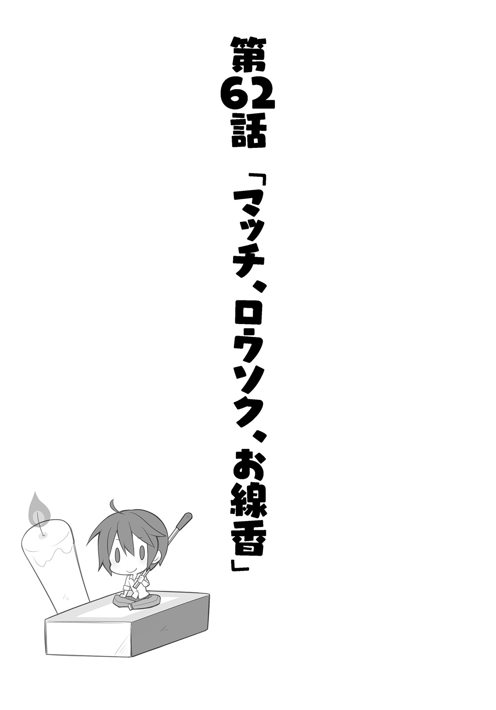
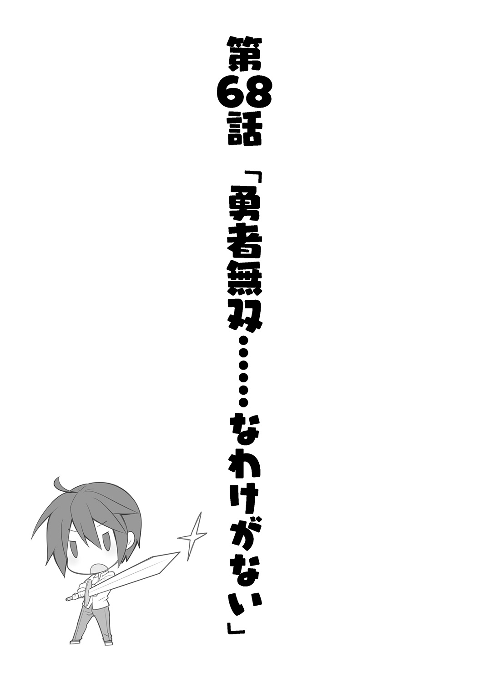
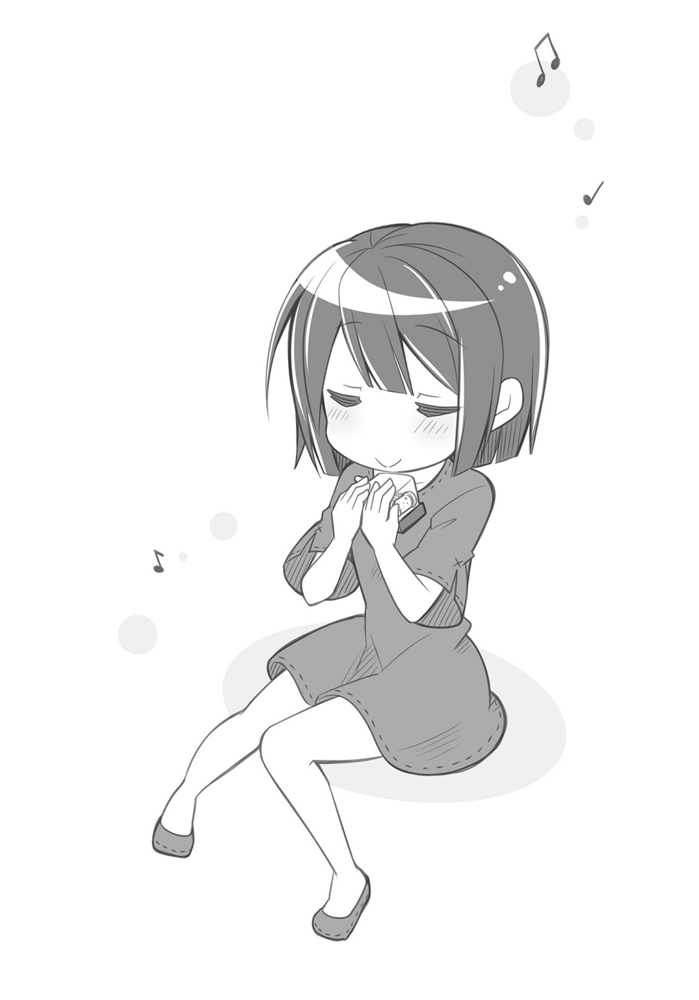

| 異世界Cマート繁盛記 4 | |
| 新木伸 | |
この本は縦書きでレイアウトされています。
また、ご覧になる機種により、表示の差が認められることがあります。
目次
第62話 「マッチ、ロウソク、お線香」
第63話 「スマイルＯＧ」
第64話 「キングス・フィールド」
第65話 「いい服」
第66話 「夏はいずこ」
第67話 「清涼飲料水無双」
第68話 「勇者無双......なわけがない」
第69話 「耳がぴこぴこ」
第70話 「オルゴール無双」
第71話 「スランプ」
第72話 「お姉さん」
第73話 「醤油さし無双」
第74話 「調味料無双」
第75話 「メイド喫茶無双」
第76話 「おたんじょうび」
第77話 「つかみどり無双」
第78話 「林間部活？」
第79話 「チューボーどもきたる」
第80話 「チューボーどもさわぐ」
第81話 「チューボーども寝付く」
 ダッシュエックス文庫DIGITAL
ダッシュエックス文庫DIGITAL
異世界Ｃマート繁盛記４
新木 伸

いつものＣマート。いつもの昼下がり。
俺は商品の配列を変えていた。新しく持ってきた品を、目立つところに置いてみる。
「マスター。その箱はなんですか？」
「これはマッチ」
「そっちの白いのはなんですか？」
「これはローソク」
「その緑の細長いのは？」
「これは線香」
「それ。売れるんですか？」
「いやー。わからん」
俺はあんまり自信なく、そう言った。
「なんかわたしの直感なんですけど。きっと売れないと思いますよー」
「いやー。そうかもしれない」
このあいだホームセンターに仕入れに行ったとき、レジ近くの一等地に、なんでか、マッチ、ロウソク、お線香のセットが置かれていたのだ。
こんなところにあるくらいだから、きっと、人気商品なのではあるまいか？
そう思った俺は、とりあえず、買ってみたわけだ。
自信と確信があって買ったわけではない。とりあえず置いてみただけだ。
この異世界では、売れると思ったものが売れなかったり、変なものが大人気になっていたり、おかしなことがよく起きる。
なにが人気商品となるのか、ぶっちゃけ、わかるとか言ったら噓つきだ。
よって俺は、いろいろと試すことにしている。最初に数セットぐらい買ってきて、お試しで売ってみる。売れるようなら、仕入れを増やす。
べつに儲けるためにやっている商売ではないが、不良在庫はカンベンだ。
「そもそも。これって、なんに使うものなんですか？」
バカエルフの言葉に、俺はずっこけそうになった。
「おまえ。それも知らずに売れねーとか言ってたわけ？」
「だってマスターの持ってきたものじゃないですかー。へんなもんばっか持ってくるしー」
「へんなもんじゃねえよ。便利グッズだよ」
「それよりもマスター。もっとお菓子とか食べ物とか輸入しましょうよー。そういうのなら、大歓迎ですよー」
「いやだよ。おまえがつまみ食いするし。あと重いし」
運搬してこれるのは背中に背負える量だけだ。よって積載量には限度がある。
缶詰とかは、たしかに、かなりの勢いで売れるのだが――。回収された空き缶を、ドワーフの鍛冶師がハイエナのような目で狙ってくるのだが――。
日用品の類は、なにしろ、消耗してゆくものであるから、かなりの物量が必要となってしまう。トラックで異世界に乗りつけられるならともかく、バックパックに背負える一定量で――。その一定の重さないしは体積のなかで、より人々を笑顔にできる道を考えてゆくと、品物を色々と試すことになるわけだ。
「で。今回はマッチとローソクとお線香なわけだ」
「だから。なんに使うんですかこの物体」
「なんに......って？ おまえ。そりゃあ......」
俺はマッチの箱を手に取った。中から一本出してくる。
マッチを擦ったことはあまりなかったが、やりかたくらいは知っている。ＹｏｕＴｕｂｅでも見た。
「いいか？ 擦るぞ？」
「はい？ なにをするんですって？」
俺はマッチの先端を、箱の脇の茶色のところに擦りつけた。
――しゅぼっ!!
火が生まれた。
「うわっ!! ――わわっ！」
前のめりになって覗きこんでいたバカエルフが、びっくりして、尻餅をついた。
俺はバカエルフの超反応に、一瞬、きょとんとしていたが――。
なにが起きたのか、すぐに理解した。
びっくりしてる。びっくりしてる。びっくりしてらー！
わははははは。ばかめ。
俺は立て続けに、マッチを、二本、三本と、取り出した。
しゅぼっ！ しゅぼっ！ しゅぼっ！
次々と点火してやる。
「わ！ わわっ！ わっ！ ひ！ ひいっ！」
「あはははははは――っ！」
俺は笑った。
ひいひいだって。あはははは。
「マスター......、いじめっこですかぁ？」
目の端に涙まで浮かべて、エルフの娘は言う。
「そうだ！ 俺はいじめっこだ！」
俺は胸を張って答えた。
「悔しいです」
「そうか。悔しいか。悔しいときには、〝くっ、殺せ〟――と、そう言うものらしいぞ。さあ言え。リピートアフターミー！」
「なにを言ってるんだか、わけわかりませんよ」
まだお尻をついているバカエルフに、俺は手を差しだした。
「マスターが魔法を使えるなんて思いませんでしたから、びっくりしちゃいましたよー」
「え？ 魔法？」
「いま火をつけたじゃないですか」
「いや。魔法じゃないって」
俺は手をふるふると振った。
「じゃあどうやってつけたんですか？」
「だから――、こうやって――」
「ああっ！ また〝しゅぼっ〟ってやるんでしょ！ しゅぼって！」
エルフの娘は、はやくも腰が引けている。
「次はおどかさねーよ。いいか。ゆっくりやるから、よく見てろ？」
「はいっ」
手をしっかりと握りしめて、エルフの娘は真剣な顔で俺の手元を見つめる。
しゅぼっ。
「うわあ！ ついた！ つきました！ マスター！ マスター！ もっかいやって！ もっかい！」
「やるぞ」
しゅぼっ。
「わー！ わー！ わー！」
マッチ箱の中身を半分くらい浪費したあたりで、バカエルフがようやく正気に戻った。
「へー。へー。へー。この小さな木の軸の先端に、なにか薬品がついてるんですね。これが擦られると火がついて、しゅぼって、一気に燃え上がるわけですかー」
「いや。原理はよく知らん。まあだいたいそんなもんじゃないのか」
「へー。こっちのローソクというのと同じ透明なのが塗ってあるんですねー。これはよく燃えるようにするための固形燃料なんですか？」
「いや。だからよく知らんけど。ローソクと線香は、まあ、ついでだ。なんでか隣り合って置いてあったから、一緒に仕入れてきただけだ」
「でもこれ？ なんに使うんです？」
マッチをしげしげと眺めつつ、エルフの娘は言う。
「火をつけるために使うんだろ」
「だったら、燃えさし一本持ってくればいいんじゃないですか？」
「燃えさし？」
「隣のうちか、そのまた隣のうちか、どこかの家の暖炉か竈に、薪の燃えさしの一本くらいありますよね」
エルフの娘は、卵形の頭を傾けながら、言う。
「――そうでなかったら、鍛冶屋さんとこは、一日中、火を落とさないので、みんなもらいにいきますよ」
「へー」
俺はそう言った。ツンデレ頑固親父大人気じゃん。
「このマッチ。すぐに火が起きますけど。でもすぐ消えちゃいますよ」
「そりゃマッチ一本だからな」
「火打ち石で火を熾すときにもそうですけど。火を大きくするのは、けっこう大変ですよ。まず藁あたりを燃やして、つぎに小枝に火を移して、だんだん太い枝を燃やして、最後に薪を燃やすわけです」
「そうなのか」
「だったら、燃えてる薪の一本もらってきたら、楽じゃないですか」
「そうかもしれないな」
「じゃあだめかな。これは売れんか？」
「火打ち石ぐらいには売れるんじゃないんですか？ 年に何回かは使うかもしれないですよ」
「年に何回かだけか。......だめだな」
「それより、マスターがいつも使ってる、〝かせーとこんろー〟とかいうやつのほうが、売れるんじゃないんですか？ これ。いきなり火がつきますよね。マスター。いつもこれで、コーヒーのお湯とか沸かしてますけど」
バカエルフの言うのは「カセットコンロ」のことだ。俺がいつも使っているやつだ。
「それは考えた」
実際に売ってみたし、売っているし。
だが人気はいまいちなのだった。
たしかに便利ではあるのだが、薪を燃やす竈に比べると火力が足りない。
また燃料はガスボンベで、ぜんぶあちらからの輸入に頼る。つまり俺が背負って持ちこんでこなければならない。
というわけで、あまり普及していない。ほとんど俺専用になっている。俺はどうも、竈とやらの使いかたが、よくわからないでいる。
「この〝おせんこー〟というのは、なんですかー？ なんか、これよく燃えないんですけどー？」
早くもマッチの使いかたを学習したエルフの娘が、ローソクに火をつけ、さらにお線香にも火をつけていた。
「それは燃やすもんじゃないんだよ。火がついたまま、ゆっくり燃えてゆくんだ」
「ふんふん。いい香りがします」
「そういや、においもするな。アロマがわりに使う人もいたかな。たしか」
「この〝おせんこー〟というのは、売れると思いますよ」
「なんでだ？」
「これ、何分の一セムトか――何十分かは、燃えているんですよね？」
「そのはずだが」
「だったら火種にいいかもです。このローソクとセットで売るときっと売れると思います。お線香からローソクに火を戻すのも簡単です」
「本当か？」
「ただし、〝長持ちする火種〟で売らないとだめですよー」
「そういうものか」
バカエルフのやつを信じて、「火種」として並べてみると――。
そこそこ売れた。
しかし、さらに売れたのは、普通のお線香よりも、他のお線香だった。
俺がたまたま向こうに行って、たまたまホームセンターで仕入れをしていたときに、たまたま見かけた「蚊取り線香」を買ってきたら――。
これが予想外のヒット商品となってしまった。
謳い文句は、こうだ――。
「なんと一本で四セムトも保つ火種！ 明日の朝まで火が消えません！」
一セムトというのは、だいたい、二時間弱のことらしい。蚊取り線香は、あの渦巻きのぐるぐるがきいているのか、一本で七時間も保つのだった。
しかし......。
使い道が違うんだがなー。
まー。いっかー。
いつもの午後。いつものＣマートの店内。
俺はカウンターで頰杖をついたまま、お客さんを応対しているバカエルフのやつを、ぼんやりと見ていた。
いや。尻は見ていない。
たまたま、あいつがあっちを向いていたせいで、たまたま尻が見えていたというだけであって、べつに尻を見ていたわけではない。
「まいどー、ありがとうございました～♪」
「......ました」
バカエルフが明るく笑って、お客さんを送りだす。
そのとなりで、エナのやつも、バカエルフを見習って、おなじようにしている。......が、エナの場合、遠慮しがちな声の大きさなので、最後のほうの三文字ぶんぐらいしか聞こえてこない。
うん。エナ。かーいー。かーいー。
お客さんが道を歩いて見えなくなってしまうまで、バカエルフのやつは、にこにこと笑みを浮かべていたが――。
急に、くるりと振り返って、俺のほうに向いてきた。
「マスター。なんでしょう？」
「なんでもねえよ」
俺はずびっと、視線を逸らせた。
「さっきから、なにか、ここのあたりに視線を感じていたのですが......？」
お尻のあたりに手をあてて、バカエルフは言う。
「濡れ衣だ」
「え？ 濡れた、服......ですか？ えっ？ お尻のとこ、濡れています？」
バカエルフはぴろっと上着の裾をめくって、ズボンのお尻を確かめている。
誤変換だな。うん。
俺がしゃべった言葉は、なにか、この世界の不思議な仕組みで、こちらの言葉に自動翻訳されているらしい。
だが魔法も完璧じゃなくて、たまにこうした誤変換が起こることがある。
俺の言った「濡れ衣」という言葉が、たぶん、こちらの世界になかったんだろうと思う。
ああ。なるほど。犯罪に関わる言葉だからか。
善人ばかりのこの世界では、犯罪はほとんど起きない。「濡れ衣」にあたる言葉がなかったんで、そのまんま、「濡れた服」って、頭の悪い直訳になってしまったわけか。
あっはっは。ダセぇ。世界の魔法。わりとチョロい。
「なに笑ってるんですかー？ どこですかー？ どこが濡れているんですかー？」
「どこも濡れてねえよ」
「なんと。うそですか。マスターはうそを言ったのですか。うそいくないですよ」
「うそも言ってない」
俺は言った。ケツを見ていたことは確かだが、ケツが濡れてるということは言ってない。誤変換だ。
「うそだー。うそだー。それはうそです。ねえほら。エナちゃん。マスターをいっしょにやっつけましょう」
バカエルフは、エナを味方につけようと画策するが――。
「おちゃ。いれます」
エナは、お茶の支度に取りかかっている。
最近のエナは、Ｃマートのお茶淹れ部長だ。エナの淹れたお茶がいちばん美味いと、もっぱらの評判だ。
最初はただ褒めていただけだったのだが、皆に褒められたことでやる気を出したのか、エナの腕前は、ぐんぐんと上がっていった。
いまでは本当に、めちゃくちゃ美味い。
同じ道具で、同じ水で、同じお茶っ葉を使っているのに、俺の舌でもわかるぐらい、味に違いがでている。
まじめな顔でお茶っ葉の計量にとりかかるエナを、しばらく見守ったあとで――俺はバカエルフに顔を向けた。
さっき思ったことを口にする。
「おまえのスマイルは、ほんと、０円だなー」
「０円？ 人生ゲームのお金がどうしました？」
「いやそっちじゃない。俺の世界のお金の単位だ」
「そんなの、わたしが知るわけないじゃないですか」
「そこは問題じゃない。おまえはいつでもスマイル０円だなと。――そう思っただけ。忘れろっ」
こいつはいつでもニコニコと笑っている。
愛想笑いじゃなくて心からの笑いだ。
それを言おうとしたのだが......。
よく考えてみれば、これって、褒めていることにならなくね？
なんで俺が褒めなくちゃならないんだ。
「やーい。バカー。バカエルフー」
「なぜいきなりわたしはマスターに、ばかにされなくてはならないんでしょう」
「俺がしるか。おまえがわるい」
「わたしはなにがわるかったのでしょう」
俺たち二人が、いつもの言いあいをしていると――。
「おちゃです」
エナに呼ばれた。
声にちょっとトゲがあった。
ケンカ、めっ。――的な感じで、エナから、「めっ」とやられてしまった。
バカエルフのやつは、てへぺろ、とか舌を出してテーブルに向かう。
俺はばつが悪くて、後ろ頭をぽりぽりとかきながら、椅子についた。
エナに叱られたー。叱られたー。叱られたー。
なんかエナ。いつのまにか、たくましくなってね？
ちょっとショック。でもちょっと嬉しい。
そしてちょっとキモチイー。エナに叱られるの、やみつきになりそー。
しかし――。
バカエルフとの、いつものバカなコミュニケーションをやってただけなんだが。
べつにケンカしていたわけでは、ないんだがなー。
お茶をくぴくぴと飲む。
お茶受けには羊羹。
この世界では砂糖は貴重品らしく、甘いものは飛ぶように売れる。
このＣマートにおいて、商品の値段は、あってないようなものであるが――。
需要と供給？ ――とか？ そんなような感じで、値段が定まることもある。
俺やらジルちゃんやらの運んでこれる入荷数と、品物の人気具合による売れ行きとで、値段は上がったり下がったりもする。
そんなわけで、羊羹はけっこうな高級品になってしまった。
現在の羊羹のお値段は......、おやつでぱくぱく食べるには、ちょ～ぉっとお高いお値段。
もちろん、ガキが小銭を握りしめて、顔をテカテカさせながらやってきたときには――。
値段は、そのガキの握りしめてきた小銭の額まで、突然、下がったりもする。
そんな高級品の羊羹だったが、Ｃマートの店内では遠慮なく消費されてゆく。
「なぁ。スマイル０円。やってみろよ」
俺はバカエルフに、そう言った。
「こうですか？」
ぺからー、とか、一〇〇ワットくらいに明るい笑顔が、ぱっと咲き誇った。
なんでこいつは、なんにもないのに、笑えるんだ。
「......」
エナが、「めっ」という顔で、俺を見てくる。
「ケンカしてない。してないよ？ ......エナさん？」
俺は慌てて、エナに言った。
わたわたと手を振って、無実と無罪とをアピールした。
それでもエナは、じーっと俺を値踏みするような目付きを変えてくれない。
ちょっと、こわいですよ......？ エナさん？
「エナちゃんはー、怒ってるんじゃないんですよー、妬いてるんですよー。マスターとわたしが、仲がいいからー」
バカエルフが言う。バカなことを言う。
んなわけあるか。的なことを、しれっと言う。
仲がいいわけあるかっつーの。ばーか。ばーか。ばーか。
だからおまえはバカエルフなんだっつーの。
ばか。ほんとばか。
だがエナは――。
「そ、それ――!? ちが――!? だめ――！ いっちゃ！ エルフさん――！」
わたわたわた、と、両手をばたばたと振りたくって、慌てていた。
そしてその手で、隣の席のバカエルフの胸を、ぽかぽかぽか、と、叩きにいっていたりする。
目の端っこに、涙まで浮かべて、やーめーてー！ って感じで、ぽかぽか、甘叩きしている。
うん。かーいー。かーいー。かーいー、のではあるが......。
あれ？
なんだろ？ これ？
ひょっとして、これ正解？
え？ なんでバカエルフと仲良くしてると――してないけど――、エナが、むくれんの？
ん？ ん？ ん？
んーっ？
俺はエナを、じーっと見た。
エナはうつむいて、手を腿の上でぎゅっと握って、肩をぷるぷると小刻みに震わせていたが......。
やがて俺の視線に耐えかねたのか、顔をずばっと持ちあげた。
きっ――と、俺のほうに向く。
「エルフさんのっ......、笑顔はっ、それはステキだけど......。わたしだって――笑えますっ」
ニイィィィ......。
いや――、いやいやいや！ なんかこわいよ？ エナさん？
それは笑顔というより、魔物の顔だよ？
「エナちゃん。ほら。こうですよ」
バカエルフが笑顔のお手本を見せる。
にこにこっ。
ぱあっと背景に花が咲く。
......いや。咲かないけど。
なんか、いま一瞬、花でも咲いたように錯覚した。
「こ、こう......？」
ギイイイイィィィ。
なんか物凄くマズイものでも食べちゃったような顔を、エナはした。
いやいやいやいや。それ笑顔と違うから。
「わかんない......。笑ったことない」
エナはそう言った。
なんか、ここへ来た当初のときみたいに、すさんだ顔をして、そう言った。
いやいやいやいや。エナ。笑ってるって。最近よく笑ってるから。
自分じゃ気づいていないかもしれないけど。
わりとナチュラルに笑顔だしてるから。
それでいいんだってば。ナチュラルで。
そんな魔物ないしは蟲の王みたいな笑顔を、無理矢理作らなくたって――。普通に笑えばいいんだってば――！
「ほら。マスターも、お手本、見せてあげてくださいよー。エナちゃん。困ってますよー」
「え？ 俺か？」
俺は自分の顔を指差して、聞いた。
「そうですよ。はい。お手本。お手本～♪ スマイルは０円なんですよね？ はい。ぷり～ず♪ ぷり～ず♪」
そう言われても、困るな。
いざ笑え、って言われたって、意識して笑うことなんてあんまりないし。
意識して笑っていたら、あざといし。
自然にこぼれ出すものが笑いというものだし。
「ええと......、ええと......」
俺は困っていたが、エナのために、頑張って笑おうとした。
「ええと......、ええと......、えと、えっと――」
俺があたふたしているのが、面白かったのか――。
エナは、くすっ、と笑った。
「それだーっ！」
俺はエナの顔を指差して――叫んだ。
その声にびっくりして、エナは――、びくっと身を固めた。
あああああ。
笑いが顔から消えてしまった。
◇
その後、俺とエナで、がんばって、笑おうとしてみたが......。
なかなか、「自然な笑顔」というものは難しかった。
バカエルフのことを、ほんのすこしだけ、すごいと感じた日であった。
――バカだけど。
いつもの昼すぎ。いつものＣマートの店内。
だが、今日のＣマートは、いつもと違って、大混雑だった。お客さんで賑わっているわけではない。
客じゃない連中が大勢押しかけてきて、大混雑しているのだった。
「おまえら、なんで、うちくんの？ ホームパーティなら、誰かの家でやれ」
「ホームパーティではない。重要な会合だ」
キャンデーをぺろぺろと舐めながら、クソガキ――〝キング〟が、そう言って返してくる。
こいつ、うちの店を、ぜったい、喫茶店かなにかと勘違いしている。
友達たくさん連れてきて、貸し切りパーティをはじめやがった。
商品の棚なんて、いくつか、店外に追いやられた。
「マスター。これは名誉なことですよー。キングがこんなにたくさん集まるなんて......。歴史上でも、滅多にないことなんですよー」
俺の右隣に立つバカエルフが、そんなことを言ってくる。
クソガキ――もとい、〝キング〟どもがテーブルと椅子を占領しているものだから、俺たちは全員、立ちっぱなしだ。
「しらねーよ。どーでもいーよ。うっせ。ばーか。......だいたい、キングじゃねえじゃん。キングスじゃん。これ複数形じゃん」
ガキどもは、半ダース以上、一ダース未満ぐらいはいた。
何人いるのかなんて、癪だから、数えてやんねー。
男の子のもいるし、女の子もいる。割合としては、だいたい半々くらいだ。
皆、頭に王冠を載せている。
皆、この世界の人々の標準よりも、いい服を着ている。
真っ赤なマントを羽織ったりしているのは、うちの街の〝キング〟だけだが――。
お坊ちゃんも、お嬢ちゃんも、誰しも、いい〝おべべ〟を着て、金髪碧眼で、たいへん見目麗しくいらっしゃる。
これはべつに、金持ちであることをアピールするためでなく、一目で〝キング〟だとわかるための識別子だとかなんだとか――。
うちのキングは、そう言いやがるのだが――。
俺はぜったい、信じねー。
いいとこのお坊ちゃんお嬢ちゃんだってことを自慢したいに決まってる。成金が全身をピカピカにするのと同じだ。
うん。そうに決まった。
「おちゃ。です」
うちのお茶汲み名人、エナが、皆にお茶を配ってゆく。
いつにも増して、かしこまっている。
皆、年下ばかりなのだから、そんなに緊張することねーのに。
「おい。てめーのせいだぞ」
俺は左隣にいる男を――肘でどついた。
こいつは「ファントム・バレッタ」とかいう、そこそこは有名な冒険者パーティの、セインとかいう男。
なんでか、皆からは、「勇者セイン」とか呼ばれている。
だがこんなゴロつきのチンピラ冒険者が、勇者のはずがない。まえ、アンデッドの大群に襲われたとかで、ハナミズたらして泣いていた。
もし仮に万が一、本当に〝勇者〟なのだとしても――。
きっと〝村勇者〟とか、そんな感じだ。
おらが村の勇者とか、ぜったい、そういうローカルな感じの、しょっぱい、ご当地勇者なはずだ。
「.........」
セインは答えない。真面目くさった顔で、突っ立ったままだ。
「なんか言えよ」
「ああ。すまない。キングスの警護に集中させてくれ。俺は今日はそのためにここにいる」
なんか真面目くさった顔で言いやがった。
うそをつけ。
こいつがうちの店にくる目的は、だいたい、ナンパだった。
こいつは隙あらば、うちのバカ店員を自分のパーティに引き抜こうとするのだ。ナンパするのだ。
だから俺は、このナンパ師とバカエルフの間に立っているのだ。
決してガードしているわけではない。
日当缶詰九個で雇える、格安の労働力を失うわけにはいかんのだ。ただそれだけだ。
そしてこいつは、バカエルフだけでなくて――。隙あらば、エナにまで微笑みかけるのだ。幼女を口説くロリコンなのだ。
顔だけは割とイケメンなものだから、エナは緊張してしまい――。
店の雰囲気がいろいろ変わってしまう。
邪魔っけなやつなのだ。お邪魔虫だ。
チェーンソーの替えなら、いくらでも用意してやるから、とっとと、剣を持って帰れってんだ。
ばーか。ばーか。ばーか。
エナが緊張してしまっているのは、きっと、こいつのせいだろう。
こいつがすぐ口説くからだ。
しかも俺とはクチきけねーとか？ なんなのこいつ？
しーね。しーね。しーね。
俺は心の中で盛大に悪態をついてやった。
「お、おかわり......どうですか？」
エナが、おずおずと、キングたちの一人に――そう聞いている。
「ええ。だいじょうぶよ。ありがとう。お嬢さん。美味しかったわ」
キングたちの一人が――、上品な語りかたで、エナにそう言った。
とっても綺麗な女の子だった。
......お子様だが。
一〇年くらいしたら、超美人になってるかなー。......五年くらいかな？
ガキの年齢は......よくわからん。
エナも、子供だ子供だ、と、思っていたら――。〝キングス〟たちと比べると、ぜんぜんお姉さんに見えてしまう。
「プリームム。――そろそろ始められては？」
「うむ。クゥアルトゥム。始めるとしよう」
女の子が言う。呼ばれて答えたのは、うちの〝キング〟だ。
――なんだよ？ こいつら名前あったんじゃん。〝キング〟っていうのが、名前だと思ってた。
「一番目と四番目って意味ですよ。マスター」
バカエルフのやつが、小声で言ってくる。
ほー。へー。はー。
なんかの会員番号か？ お子様のあそびの番号か？
うちのキングが会員一番なのか。
すると戦隊ものだと「レッド」のあたりか。
じゃあ四番目の女の子は「ピンク」ってあたりか。
いまだと「黄色」か「白」になるか？
「テルティウム。ご足労頂いて、感謝する」
うちのキングが、また、よそのキングに話しかける。
「......当然だ。此度の戦を止めたのは、おまえの功績だからな。クソいまいましいことではあるが」
お。なんだこいつ。クソとか言った!?
ちょいワルで、ヒネくれてるヤツ、いたー!?
こいつは色でいえば黒だな。
はじめは敵として現れておいて、あとで味方について、四の五の言いながら、なんだかんだで助けてくれたりするやつだ。
めんどくさいやつだ。
いるよな。そーゆーやつ。
「私の功績ではない。すべては、そこの......店主のやったことだ」
うちのキング――プリームム君が、そう言った。
キングス全員の視線が、ずびっと、俺に集まる。
へ？ 俺？
俺......？ なにかやったん？
「マスター。マスター。......ほら。マスターのことですよ」
バカエルフが、肘でつついてくる。
わかってるよ。そんなん。
なんで自分が話題にあがっているのか、わかんねーだけだってば。
「店主。こちらへ。......皆に紹介したい」
「お、おう......」
呼ばれて、俺は、なんとなく前に出ていった。
なんか、キングの――うちのキングの――株をあげることになってしまうみたいで、癪だったが、なんとなく、雰囲気に吞まれて、前に出て行ってしまった。
「キングスを代表して、礼を言いたい」
うちのキングの声とともに、一〇人は越えてるガキどもが、一斉に俺に向けて頭を下げる。
一人例外がいて――さっきの、なんかごねてたやつだ。
ぶすっとした顔でいる、そいつに――。
「――テルティウム？」
女の子が、ヒネガキに言う。
「貴方の管轄地域でしたよ。本来なら、プリームムに礼を言うところよ？」
「わかっている」
女の子に言われて、そいつもしぶしぶ、頭を下げた。
うはははは。だっせえー。
ガールフレンドに叱られてやんのー。
それで頭下げてやんのー。頭あがんねーでやんのー。尻に敷かれてやんのー。
「なー？ テルなんとかって、それ、何番？」
「三番目ですよ。マスター。このあたりの領域では、三番目に〝プロテクター〟になられたキングです」
バカエルフが教えてくれた。
ふむ。このお子様たちの戦隊チームの名前は、「プロテクター」っつーのか。なんかそれっぽい名前だな。「超平和プロテクターズ」とか、きっと、正式名称はそんなんだな。
「彼が、今回の戦争を止めた最大の功労者だ」
うちのキングが、そう言った。
――それで俺は、なんの話をされているのか、ようやくわかった。
このまえ――といっても、もう、二ヶ月くらいまえになるのか？
どこか遠くの街で戦争が起きそうだという話があった。
それを止めるために、俺はちょっと頑張った。
いま、その話をされているわけだ。
「彼のおかげで我々はこうして――」
「――ええ？ ああいや！ ぜんぜんそんなことないって！ 俺はただ塩を運んだだけで――！ しかも俺は一〇分の一しか運べてなくて。あとダウンしていただけだし。残りはぜんぶ、ジルちゃんとそのお姉さんと、ジルちゃんのカレシとが運んでいて――。あと商人さん！ そう！ 隊商率いて一〇トン運んでいったのは商人さんだから！ だいたい功績はほとんど商人さんだから！ 最初に言いだしたのだってそうだし！ だから礼を言うなら俺より商人さんのほうで――って？ なんで商人さんいないの？」
「うむ。商人氏の功績も無論であるが。彼はいま二つの街への物資の交易で忙しくてな。――なにしろ商人なのでな」
ああ。なんかそんなこと言ってた。
二つの街の戦争は止まったが、いろいろ、足りない物がたくさんあるので、交易商人は大忙しなのだと。
このあいだ立ち寄ったときに、そういえば、言ってた。そんなこと。
――ん？
なんか空気がおかしいな？
セインとエナが、目をまん丸に見開いて、俺を見つめている。
なにかに驚いているような顔？
そしてバカエルフのやつはといえば――。くすくすと笑って、俺を見ている。
「キングスの話を遮られるのは、マスターくらいなものですねー」
ん？ なに？ 俺なにかやったん？
「いや。構わない」
うちのキングが答える。
ん？ ん？ ん？
なに？ なんなの？
ガキの話を遮ったくらいで、びっくりされるとか、笑われるとか？ 感心されちゃうとか？
いったい、なんなの？
「――話の続きだが。彼のおかげで、我々は、集まって話しあうことに決めた。これまで各個がバラバラに活動していたわけだが。それでは今回の戦を止められなかった。今回のような事態は、再び、起きるかもしれない。我々は〝プロテクター〟の本能として、それを座視することはできない」
うちのキング君が、なんか、難しいことをくっちゃべっている。
ガキにはああいう時期ってあるよな。なんかむずかしい、それっぽいことを、カッコつけて言いたくなる時期ってものが。だれでもいっぺんはかかる、ハシカみたいなもんだな。
「ここにこうして、我らは、集まった。......第一回。キングス・フィールドの開催を宣言する。〝世界の平和のために〟」
うちのキング――プリームム君が言う。
ほかのキング――。たぶんみんな番号付き――の子たちが、一斉に、声を揃えて――。
「〝世界の平和のために〟」
今日のＣマートは、ガキのお子様会に占領されていた。
まあ、そういうこともある。たまにはいいか。
この店では、俺が店主だ。俺がルールだ。
俺が「いい」といったら、それは、「いい」のだ。

「いい服、ですかー？」
いつもの昼すぎ。いつものＣマートの店内。
俺の問いかけに、バカエルフのやつは、きゅるんと、小首を傾げてみせた。
そんな可愛い仕草をしてみせたって、なにもやらんからなー。
「ああ。そうだ。いい服だ。――そーゆーのって、どこで売ってるものなんだろう？」
「うちで売ってるじゃないですか。てーしゃつ、とかいう服なら」
「バカ。ああいうんじゃねえよ。Ｔシャツなんて、ぜんぜんいい服じゃねえよ」
「でもいい感じの漢字。書いてありますよー。よく売れますよー」
「そりゃ。まあ。売れるが......」
Ｔシャツはうちの店における売れ筋商品。
それ以外の衣類は一切売れない。
だがＴシャツだけはよく売れる。
服が売れないことには、理由があって――。品が悪いわけでも、不人気というのでもなく、ただ単に〝需要〟がないからだ。
この世界における〝服〟というものは、ぼろぼろになって、すっかり着られなくなるまで着るものであるらしい。
現代世界のように、「去年のものを着るだなんてウッソ!? やっだー!? 信じらんなーい!?」なんていうことはない。
五年とか六年とか着る。道行く人の着ている服のビンテージ感からいうと、一〇年ぐらい着ているのかもしれない。
服をそれだけ長持ちさせるということは、つまり、服の買い換えも少ないということで――。
よって、服はまったく売れない。
まあ、現代世界の服のデザインが、こちらの人のセンスに合わないということもあるのだろうが――。
「服って、どこで売ってるんだろうなー」
俺はそうつぶやいた。
この異世界にきてだいぶ経つのだが、服屋というものを、見たことがない。
それ以前にお店が少ない。
道の向かいにオバちゃんの食堂があって――。あとは、街の真ん中のほうに、鍛冶屋があって――。
剣や盾や包丁やハサミやカミソリや、ベルトのバックルやら、金属製品などを売っている。
肉や穀物などの食料品なら、いつも午前中に開いてる露店街で、いつでも買える。
しかし、服の需要がないせいだろうか。
〝服屋〟という専門店は、どうも見あたらないのだ。
「つぎのバザーは、もうちょっと先になりますねー」
「どのくらいだっけ？ ......エナちゃん？」
「......セドナの節。まだあと二〇日残ってるよ？」
「じゃあ、あと、二〇日はやりませんねー」
「そっかー......」
ずいぶん先だな。
しかし、なんだ？
セドナの節とかいうの？
向こうで言うところの「月」みたいなものか？
じゃあ、毎月、月はじめの一日とかに、バザーをやるわけか。
そこで服とかも、買えるのか。
そういえば、バザーは覗いたことはなかったな。
これまでにも何回かやってたのは知ってたが......。
なんかお祭りやってんのかなー？ くらいな感じで。あまり気にしていなかった。
こっちも商店主なわけで、お祭りをやっているからといって、店をほっぽり出して見にいくわけにもいかない。まぁ、仮にほっぽり出しても大丈夫なのがこの世界なんだけど。
「おまえの服とかも。そういうところで買ったのか」
「これはー......、いつどこで手に入れましたっけ？ はて？ 思い出せないです」
自分の緑色のチュニックを引っぱって、バカエルフは言う。
「なんだよ。そんなことも忘れてんのかよ。バカだ。やっぱおまえはバカエルフだ」
「うふふ。マスターより年寄りかもですよ？ ――この服」
うげっ。やり返された。
ほんとだとすると、ちょっとコワいぞ。
ファンタジー世界のエルフは、じつはコワい生き物だった。
「おまえ。アウトな。色々な意味で」
「アウトになってしまいましたー」
てへぺろ、と舌を出す。
だからな――。
そんな可愛い仕草をしてみせたって、なんも、でねーっつーの。
服なんて買ってやらねーっつーの。
おまえの服を買う話なんか、してねーっつーの。
ぺーっ、ぺっぺーっ。
「エナちゃーん、呼んでますよー？」
バカエルフが言う。
その声に呼ばれて、エナが、「わたし？」というふうに、自分の顔を指差した。
「そう。エナだよ。エナの服だ」
「わたしの......服？ あるよ？ これ？」
エナはいつも着ている自分の黒い服を、ぴろっと指先でつまんでみせた。
エナの着ている服は、質素なワンピース。そして色は黒。
飾り気もなんにもない。実用一辺倒の服だ。
バカエルフのほうは、上は草色に染めたチュニックとかいうもの。下は枯れ草色のズボン。ツーピース仕様となっていて......。こちらも旅人向けの実用的な格好であるわけだが、まだ飾り気というものが感じられる。
「うーん......。それも服ではあるんだがー......。なんつーか、こう......？ このあいだみたいな、なんか、かしこまった感じのときに、女の子は、いい服を着るもんなんだー」
なんとか説明しようと、俺は試みる。
しかしどうもうまく伝わらない。異世界の壁というやつか。
「ほら。このあいだ、キングのやつが、うちの店を貸し切って、お友達を呼び集めて、なにかの会をやってたじゃん？ あいつらみんな、いいおベベ、着ていたじゃん？」
「おべべ？」
エナは首を傾げる。
「キングたちはいつもああいう感じですよ。ほら。一目でわかるじゃないですか」
「あそこまで、いい服じゃなくてもいいんだが。なんかこう。もうちょっとだな」
エナの黒いワンピースを、上から下まで見つめながら、俺はそう言った。
エナははにかんだような顔を浮かべて、膝小僧を隠した。
「このへんだと。いちばんファッショナブルなのはー。オバちゃんかなー」
オバちゃんが、いちばんファッション・リーダーっていうのは......。どうなん？
まあ外見はロリでＪＳだが。
以前は、オバちゃんのことを、ＪＣくらいかなー、と、思ったこともあったのだが。
正真正銘モノホンのＪＣのジルちゃんと並べて見比べてみたら、ああこれはＪＳだわー、と、一目瞭然だった。
「いい服......、って？ どういうの？」
「ええと。だな......」
あらためて問われると、困ってしまう。
「たとえば、色が、カラフルだったりするな」
「黒......、だめ？」
「エナは黒、好きか？」
「うん。好き」
「じゃあ。黒でもいいんじゃないか？ モノトーンっていうのもあるからな」
「色のほかは......、どういうの？」
「うーん。形かなー」
「かたち？」
「ほら。バカエルフは、ズボンだろ。――あとオバちゃんなんかは、ホットパンツで生足で、あと、ビスチェ？ ――なんかそんなようなの、重ね着していたりするだろー」
「そうだっけ？」
エナは首を傾げている。
おーい......。そこまでファッションに関心ないんか......。
「じゃあ、ちょっと見てこーい」
エナは、たたたっと、店の外に走っていった。
オバちゃんの食堂は、すぐそこだ。
やがて帰ってくると――。
「......ほんと、......だった」
息を切らせて、そう言った。
うん。一生懸命、走って見てきたんだなー。
うん。エナ。かーいー。かーいー。
「エナも、違う服、着てみるか？ べつに無理にとは言わないが」
俺はそう言ってから、しばらく待った。
エナが自分の意見を口にするには、時間が必要なのだ。
俺はよくわかっているから、無限の忍耐力をもって、待つことができるのだ。
「......ちょっと。着たい」
しばらくして、エナはぽつりと、そう言った。
そして、すぐそこに続けて――。
「だけど、まれびとさんの迷惑になるなら。......着なくてもいいよ？」
「ふふふっ......。エナちゃん？ マスターは、エナちゃんに着せたいんですよー」
「おいおい。なにを言ってるバカエルフ。べつにそういうわけじゃないぞ。バカめ。おまえはほんとバカだな」
「......着なくていいよ？ へいきだよ？」
バカエルフのやつを糾弾していたら、エナが遠慮しはじめてしまった。
「ああああ。わるいわるい。ごめんごめん。俺。噓ついた。いま噓つきました!! エナが可愛い服着たところを、ちょっと見たいかなー、と、思った。俺が思った。エナが迷惑だったらいいんだけど。そうでないなら、ちょっとは興味あるなら、着てみてくれたらいいなー、と、思うんですけど。どうでしょうか？」
「マスター。どうして、そこ、敬語なんですかー......？」
バカエルフのやつが、くすくすと笑っている。
バカめ。ほんとバカめ。
「......着てみたい、です」
エナはずいぶんと経ってから、そう答えた。
それまで針のむしろの上にいた俺は、その答えをもらって、はー、っと、息を大きく吐き出したのだった。
◇
とっておきのときのための、いいオベベを、エナに用意しよう。
と、そう決まったのはいいのだが――。
俺は、ほとほと、困ってしまった。
街のなかでは売ってないし......。
こっち（現代）で買うにしても、どういうのを選べばいいのか、俺、わかんねーし。
困ったときには、美津希大明神――。
美津希ちゃんに頼んで、選んでもらうことになった。
美津希ちゃんはエナと会っていて、もうエナのことは知っている。お泊まりしたときにも、一緒の毛布で一晩を過ごした。
美津希ちゃんは大変ハッスルして、エナの服選びを手伝ってくれた。
美津希ちゃんと一緒に半日、あちこち回った。
俺が生まれてこのかた一度も行ったことのないような、女の子向けの店に出たり入ったりを繰り返し――。
こちらの世界のファッションが、いかに進歩しているのか、俺は思い知ることになった。
エナ向けの服を一着選ぶ。
お礼――ということで、美津希ちゃん自身の服も、一着？ それとも一セット？ 上から下まで一揃いを買ってプレゼントした。
美津希ちゃんは大変喜んでいたが、助かったのは、むしろ、こっちで――。
そして買ってきた服を、エナに着てもらったときには――。
はにかみながら「似合う？」と聞いてきたエナに、俺は、もちろん――「イエス」と答えた。
女の子が新しい服を着てみせたときには、いかなる場合であっても「似合う」と言わねばならない。
そのくらいは心得ている。
実際、似合っていたけども。
新しい服が手に入ったが――。
エナは普段はいつもの黒いワンピースを着ている。
その服は、とっておきの日の服となった。
いつもの昼過ぎ。いつものＣマートの店内。
「そういやー、こっちってー、夏って、いつ来るんだー？」
頰杖をつきながら、俺は、誰にともなく――そう言った。
「〝なつ〟って、なんですかー？」
そう言ってきたのは――バカエルフ。
はァ？ なに言ってんだ？ 意味わかんねーぞ？
やっぱあいつはバカだ。バカなエルフだ。
「夏っていったら、おめー......、夏のことだろ」
「それはなんだか、肉味の食べものの名前の響きがします。――わっふ」
「いや、わっふ、じゃなくて――」
夏の食い物？
夏的な食いもんってなんだ？ バーベキューとかか？
まあたしかに〝肉味〟かもしれんが――。
「なあ......、エナー」
バカエルフじゃ話にならんので、エナに話しかけた。
エナは「なに？」という顔で、すぐこっちを見てくれる。
「夏って、いつぐらいに来るんだ？」
向こうの現実世界のほうは、そろそろ暖かくなってきている。
しかしこちらは、ぜんぜん暑くならない。
ここにきて数ヶ月以上も経つのだが、いっつも過ごしやすい気候のまんま。
そういや向こうが真冬だったときにも、こちらは今日と似たような感じの日だったっけ。
向こうにリープして、寒くって、慌てて上着を取りに帰ったこともあった。
「なつ......、って、なに？」
エナが、そう言った。
きゅるん――と、小首を傾げられてしまう。
ありゃりゃ？ エナも知らんの？
ということは......。この世界の人間は、「夏」を知らんってことか？
「すまん。おまえをバカにしすぎていたようだ」
「なぜわたしはマスターに謝られているのでしょう？」
「なつ......、って、なに？ たべるもの？」
「いやちがうぞ。そっかー。エナは食べものと勘違いしちゃったのかー」
うはははは。
うんうん。
エナは、かーいー、かーいー。
「なぜ食べものと誤解しても、エナちゃんだと〝かーいー〟で、わたしだと、〝バカめ〟になるのでしょう？」
バカエルフが言う。
それはおまえがバカエルフだからだな。
「夏的な食べものというと、そーめん、かき氷、ウナギ、スイカ、......あとは、バーベキューなどだな」
「最後のそれは、すごく肉味の響きがします」
「バーベキューか。まあ。たしかに。肉焼いて食うな。肉肉肉。って感じになるな。だけど野菜も食わなきゃいかんから、正確には、肉肉肉、野菜、肉肉、野菜、肉肉肉肉、って感じだな」
「ステキです」
「じゃあ今夜はー、バーベキューやるかー」
「わっふ！」
「わーい」
バーベキューをするなら、いろいろ、準備をしないとな。
食材は市場に行けばあるだろう。道具のほうは、鍛冶師のツンデレ・ドワーフに頼めば作ってくれそうだが......。
向こうの世界で調達してきたほうが、いいだろうか。ホームセンターに行けばいくらでも売っていそうだな。
......ん？ まてよ？
もともと、なんの話だったっけ？
バーベキュー・パーティの話じゃ、なかったはずだが......？
「エルフさん。〝なつ〟って、お肉会って意味だよ。......きっと」
「わっふ！ わっふ♪ わっふ♪」
「いや違うぞ。それは」
俺は言った。なにか誤解が広まってしまっている。
「だから〝夏〟っていうのは、季節のことなんだ」
「......きせつ？」
「ほら。あるだろ。すんげー暑かったり。太陽が真上にあって、汗がだらだら出てきたり」
「ああ。そういう地方はありますねー。旅の途中にありましたー。ありましたー。暑いところっていえば、すごい密林があったり、砂漠になってるところもありましたっけー」
「いや。地方の話じゃなくてだな......」
俺は頭をかいた。ぼりぼりとかいた。
なんで伝わらないんだ？
「どこの地方だって、一年ごとに季節が巡ってくるだろ。夏になれば、カーッって暑くなるだろ。そんでもって、冬になれば雪が降るだろ」
「雪なんて、このへんじゃ降りませんよー。もっと〝まえ〟か〝ひだり〟の地方に行かないとー」
バカエルフが言う。
〝まえ〟とか〝うしろ〟とか〝みぎ〟とか〝ひだり〟というのは、この世界における〝東西南北〟のようなものだと、俺は思ってる。
そりゃ寒い地方に行けば雪くらい降っているだろう。
ファンタジー世界なんだから、年中降ってるところもあるのかもしれない。雪の国とか氷の国とか、あるかもしんない。ファンタジー世界なんだから。
「あれ？ ......じゃあ、このへんって、雪、降らねーの？」
「さっきから、そう言ってるじゃないですかー？」
「冬、来ねえの？」
「ですから、〝なつ〟とか〝ふゆ〟とかいうのって、なんなんですかー？ 肉味の響きがするんですけどー？」
「冬っつーたら、鍋だな」
「鍋！ それはわかります！ ぐつぐつ煮るやつです！ お肉投入します！」
「おまえはほんとうに肉のことしか頭にねえのな」
「生き物が食べること以外を気にしてどうしますか。そしてエルフだって生き物です」
なんかドヤ顔で言ったー!?
言い切ったー!?
「高貴なエルフも生き物であるので、食べることを気にしていて当然なのです」
おまえ。自分が高貴だとか。いまゆった？
「じゃあ......、ここには、季節とか、ないわけ？ 暑くなったり、寒くなったり、しねーの？」
「しませんね。ところで先ほどから疑問なのですが。マスターのところは、同じ土地が、暑くなったり寒くなったりするんですか？」
「するよ」
「それは熱帯密林になったり、砂漠になったり、氷に閉ざされたりするってことですか？」
「いや密林にはならんし。砂漠にもならんし。氷に閉ざされる......って、どんなんだ？」
なんでそう極端になるんだか。
「夏は普通に連日気温三〇度超えるくらいで。冬はマイナスになったりすることもあるっけかな。氷は張るかもだけど、いつも凍りついているわけじゃねえよ。昼にはとけるよ。雪が降ってきたら、一週間もとけないことはあるけどな。――そーゆーふうに、一年ごとに、暑いのと寒いのとを、繰り返すんだ。夏と冬のあいだには、春と秋っていう、寒くも暑くもない季節があるんだ」
「〝はる〟と〝あき〟っていうのも、なんか肉味の響きがします」
「それはもういいから」
「だけど、マスターの世界。そんなに気候がちょくちょく変わるんだと、困っちゃいませんか？ 穀物とか育たないのでは？」
「だから春に種まいて秋に収穫するんだろ。......よくしらんけど」
「それじゃ育つ穀物が少なくなっちゃうじゃないですか」
「いや。あっちの世界じゃ、それがあたりまえなんだけど。......こっちは違うのか？」
「〝ふゆ〟とかゆーのは、来ませんから、いつでもすぐに穀物は育ちますね」
ほー。へー。はー。
なるほど。だからこんなに豊かなのか。
豊かだから、皆が、のんびりしているのか。
「だけど。なんで来ないんだよ。夏。あと冬」
「マスターの世界では、なんで来るんですか？」
「しらねーよ。聞いてるのは俺だよ。なんで来ねーんだよ？」
「だからそっちでは、なんで来るんですか？ 地面が丸かったりでもするんですか？」
「うえっ？ ......ま、丸いんじゃねえの？ よく知らんけど」
たしか、理科の時間あたりに、やっていたよーな？
寝ていたので、よく覚えとらんが。
「またまたー。地面が丸いわけないじゃないですかー。地面はどこまでも平坦なんですよー。あたりまえでしょう」
「いやー？ そうだったかなー......？」
ちょっと自信がない。もっと授業を聞いとけばよかったか？
まあ。いっか。
いつもの午後。いつものＣマートの店内。
「本日の無双ネタはーっ！ これだーっ！」
俺は完璧に計算し尽くしたタイミングで、叫び声をあげると――。
エプロンの前ポケットに入れておいたアイテムを、高々と頭上に差しあげた。
――が。
皆のリアクションが薄い。
ないわけではないが、すんごく、薄い。
バカエルフのやつなんて、かふー、と、大きなあくびをしている。
ツンデレ・ドワーフは、きょとんとしている。
エナだけが、申しわけ程度に、ぱちぱち――と、手を小さく叩いてくれている。
むしろエナの思いやりが痛い。
「ねえマスター......。自分で〝無双〟とかゆーの、どうかと思いますですよー？」
バカエルフのやつが、目尻の涙を拭いながらそう言った。
「いきなり大声をあげて、店主はどうかしたのか？」
ドワーフはそんなことを言っている。
うっわ。ガチだよ。マジだよ。本気で心配しちゃっているよ。アブナイ人を見るような目で、俺を見てるよ。
「じゃ......。いいよ」
俺はしょんぼりとして、アイテムをポッケに戻した。
「せっかく。うまいもん。持ってきたのに......」
「――!? マスター。それは食べるものなのですか？」
バカエルフのやつが耳をぴこぴこ動かして、超反応する。
「しらねーよ。どうでもいいんだろー。どうせたいしたもんじゃねえよー。ふーんだ」
俺はすっかりスネていた。
膝を抱えてカウンターの内側でうずくまる。
「ほら。エナちゃん。エナちゃん。おいしいものですよ。――さっきチラって見えた感じだと、肉味じゃなくて、お菓子味ですよ」
バカエルフのやつが、エナをけしかけている。
バカエルフにそそのかされた、というわけでもないのだろうが――。
しゃがみこむ俺のところにやってきて、背中をゆすった。
「ほんじつの、むそーアイテム......見たいです」
「よーし！ じゃあ見せてやるぞー！」
俺は一瞬にして立ち直った。
これがバカエルフなら、半日ぐらいあとを引いて、うじうじ、うだうだ、言っているところだが......。
エナに言われては仕方ない。一瞬で立ち直らないわけにはいかない。
「本日の無双アイテムはー、これだーっ！」
俺は透明な液体の入ったビンを取り出した。
「ガラス......の？ ビン？」
「これはラムネというものだ」
俺は胸を張って、そう説明した。
緑がかったガラスのビンに、炭酸の清涼飲料水が入っている。
ビー玉で栓がしてある――この飲み物の名は、「ラムネ」という。
ガラスのビン――それ自体は、こちらにもある品物だ。
砂を高温で溶かすとガラスになるらしい。
街には職人もいる。
窓にはめる板ガラスなんかも、手作業で器用に作りだしている。ガラス細工でビンだって作っている。
「ラムネ？ このビンのこと？」
「ビンのほうは、じつは、あまり関係がない。問題は中味だ。――おいしーものが入っているんだぞー」
ラムネのビンを、エナに渡す。
「......開けられないよ？」
「かしてみろ」
エナに教えてやろうとしたら、ツンデレ・ドワーフが割りこんできた。
年上の威厳を見せつけようとしたが、開けかたが、ぜんぜんわからず――自分から台無しにしちゃっている。
そんなツンデレ・ドワーフには、王冠のはまった別のビンを渡してやった。
いまどき珍しい、ガラスのビン入りのコーラだった。
この栓をしている金属――〝王冠〟に、ドワーフは興味津々だろうと思って、おみやげとして持ってきたのだが......。
「おおう！ なんと精緻な加工か！ 金属で封緘をするという発想は！ なんと大胆な！」
なんか、予想の斜め上を行く、喜びっぷり、エキサイトっぷり。
まあ、喜んでもらえるのは、よいことだ。
ドワーフに渡したのはコーラだが。
今日の本命はラムネ。
エナに渡したレトロなビンのほうである。
昭和の昔から連綿と受け継がれる、伝統的な「清涼飲料水」であった。
甘くて透明で、しゅわしゅわする、アレだ。
そのビンには、蓋もなければ、プルタブもついてない。王冠とも違う。
開けかたは、ちょっと独特で、レトロきわまりないものだった。
心がぴょんぴょんするような方法で、ラムネのビンは、開けるものなのである。
「開けかた。書いてあるだろ。エナ。読めるだろ」
「キャップを......、はずして......、玉押し、で......、おします」
エナは日本語を読める数少ない異世界人だ。
まえはバカエルフだけだったのだが、最近では、エナもだいぶ読めるようになってきている。ひらがなばかりではなくて、なんと、簡単な漢字まで読める。
エナ。えらい。えらい。
いいこ。いいこ。
ラムネのビンの開けかたは独特だ。
蓋のところにはまっている「ビー玉」を、内側に落としてやるのだ。
そうすることで、ラムネは飲めるようになる。
「おすよ？」
いざ開けてしまう前に、エナは、皆にそう確認した。緊張した顔で、そう聞いてくる。
うん。かーいー。かーいー。
エナは、ラムネを開けた。
――ぷしゅうううう！
泡が噴き出す。
「うわ。うわっ。うわわっ。あわっ。あわがっ――！」
どんどん噴き出す。手で押さえるが噴き出す泡は止まらない。
わはははは。
皆。やるのだ。誰もが通る道なのだ。
あれは――。泡が完全に止まるまで、玉押しをずっと強く押さえておくのが〝コツ〟なのだ。
上級者ともなると、一滴もこぼすことなく開けることさえ可能である。
――が、初心者は、かならず、いっぺんはこぼす。大量にこぼす。
「ほら。エナ。これで手を拭け」
俺は最初から用意していたタオルをエナに差し出した。
ツンデレ・ドワーフが、自分の腰に下がっていた小汚いタオルを、エナに渡したそうな顔をしていたが――。
残念だが、エナが受け取ったのは、俺のタオル。
「びっくりした......。あまい？」
濡れた指先を口に含んで、エナは言った。
「ああ。甘いぞ。しゅわしゅわするぞ。飲んでみろ。――でも、びっくりするなよ？」
エナは力強くうなずいてから、ビンに口をつけた。
「......どうだ？」
「......。おいしーっ!!」
エナはすごいびっくりした顔で、そう言った。
よーし、よしよし、いいぞいいぞー。
これはひさびさに無双の予感だぞー。
「何本も持ってきたからな。皆にも一本ずつあるぞ」
ツンデレ・ドワーフと、バカエルフと、それぞれに一本ずつ渡す。
しかしバカエルフ――。肉じゃなくてお菓子だと、「わっふわっふ」いわないのな。甘いものだと平静なのな。大人の対応なのな。
それがなんで、肉味だと子供にさえ嚙みつく凶獣と化すんだろうか。
エナのやりかたを見ていたから、二人ともすんなり開けた。
そして例によって泡を大量にこぼした。
俺はその脇で、泡を一滴もこぼさず、スマートに開けてみせた。
「すごい」
エナがつぶやく。

ふっふっふ。
俺のすごさは皆に伝わったようだ。
「あれ？ なんかわたしだけ、飲めないんですけど？」
バカエルフがつぶやいている。
ビンを傾けてはいるが、ビー玉が詰まってしまって、飲めずにいる。
「すぐ出なくなっちゃうんですけど？」
「わっはっは。これは正しい心を持つ者しか飲めない飲み物なのだ」
「なんでー？ なんで飲めないんですかー？」
「普段の行いが悪いと、飲めないのだ」
「ええー？」
からかっているのも面白いが、あまりやってるとかわいそうなので、俺は、ほどほどのところで、教えてやることにした。
「ほれ。ビンの口元のところに、二つ、へこみがあるだろ。ビー玉をそこに引っかけるようにすれば、落ちてこないんだよ」
「ほー。へー。はー。このくぼみ、飾りかと思っていました。よく考えられているんですねー」
バカエルフは感心している。
これ、知らんやつは、おおよそ、二分の一ぐらいの確率で引っかかる。
エナ。セーフ。
ツンデレ・ドワーフ。セーフ。
バカエルフ。アウト。
......うん。
やっぱ日頃の行いだな。
肉。肉。わっふ。わっふ。――と、食い意地の張ったことをやっているから、そのせいだな。
バカエルフは、こくこくとラムネを飲んでいる。
その白い喉が上下する。
「ごちそうさまー。おいしかったですー」
エルフの娘は、ラムネを飲み終えた。
そして俺に目をやって、にこっと、笑いやがった。
俺はなんだかちょっと気まずくなってしまって――。顔を背けた。
「お、おう......、う、うまかったのか。......よ、よかったじゃん」
顔を背けた先にはエナがいて――。
不思議そうな顔をして見てくるエナに、俺は、にっこりとぎこちなく笑った。
「だけどマスター。これ。お店では売れないですよ？」
「なんでだ？」
「これ。中味飲んじゃったら、おしまいですよー」
「おしまいだな」
「このビンはきれいなんですけど......。これ中味のほうが売り物ですよね？」
「そうだな。中味の飲み物のほうが、売り物だな」
「マスター。重くてかさばるもの、運んでくるの、嫌がるじゃないですかー」
「べつに嫌がっているわけではないが。ただ。俺の積載量と、こっちの人たちの〝笑顔〟との、最大バランスを考えているだけだが」
俺の積載量には限りがある。
そのなかで最も皆を笑顔にできるように、日夜、商品を吟味しているわけだ。
最近はジルちゃんという、積載量の大きなアルバイトを雇ったものの――。
彼女はＪＣなので中学校もあるし、なにやら部活も忙しいということで、いつ来るか定かではない不定期便だった。
「どうだー？ エナ？ この飲み物、売れると思うかー？」
「うん。おいしいよ？」
エナはこくんと首を折るようにして答える。
「でも運んでくるの、たいへんだよ？」
「ふっふっふ。......その点も、考え済みだ。対策もばっちりだ」
「......？」
俺は次なる無双アイテムを準備しにかかった。
「ここに取り出しましたる！ 白い粉！ 〝じゅーそー〟と〝くえんさん〟――このふたつ！」
どちらも大袋で持ってきていた。「五キロ」と書いてある大袋だ。
「あともうひとつは、うちの店でいつも売ってるお砂糖！ この三つを、ティースプーンで一杯、二杯、三杯、と計って、入れてぇー！」
俺は口上を述べながら、グラスに粉末を入れていった。
「そしてここに！ 水二〇〇ミリリットルを注ぎ入れるとぉー！ あーら不思議いぃぃー！」
しゅわしゅわしゅわ......、と、泡立ちはじめた。
かきまぜると、シュワー！ っと、もっとハッキリと発泡した。
「ラムネ！」
覗きこんでいたエナが、声をあげた。
グラスの中と、俺の顔と、何度も見比べるように顔を動かす。
うん。かーいー。かーいー。
「そうだ。ラムネだ。さっきの空きビンがあったろ。あれ持ってこーい」
俺が言うと、エナは、空きビンを取りに走った。
たたたって、走って、たたたって、戻ってくる。
「じゃ。ビンに注ぐぞー」
シュワシュワする液体をビンに詰める。
「んで、逆さまにするとなー」
ビンを逆さまにする。すこしこぼれはしたが、ビー玉がすぐに落ちてきて、栓がはまった。
「ほら。これで再充塡、完了ーっ」
俺はエナにビンを渡してやった。
「いまのはテストだったから、飲みかけのを入れたり、ビンも洗わずに使ったけど。きちんと仕事にするときにはー。衛生的にやるぞー」
「わたしの仕事？ わたし、それ、できる？ やっていい？」
「おお。できるぞー。やっていいぞー」
「やる！」
エナが強くうなずいた。
この店に俺たちと住むようになって、ずいぶん明るくなったエナだったが......。
こんなにはっきりと意思表示をしたのは、はじめてだった。
俺は振り返って、エルフの娘を見つめた。
向こうが微笑んでくるので、俺も微笑みを返した。
エナの頭を撫でてやった。
髪の毛は柔らかくて、ふわふわだった。
◇
思ったとおり、「清涼飲料水」はＣマートの人気商品となった。
ビン入りで銅貨二枚。
飲み終えたビンを持ってくると、銅貨一枚が返却される。
たまに、ガキが何十本かビンを集めて持ってきて、銅貨何十枚かを、ほくほく顔で持ち帰ってゆく。
小遣い稼ぎのよい方法を、発見してしまったらしい。
俺は買いにくるお客さんを、笑顔で見守っていた。
一本の清涼な甘い飲み物を買いにくるお客さんも、買いにはこないがビンを回収して持ってくるガキんちょも、皆、笑顔で応対する。
エナはせっせとビンに液体を詰めていた。
ビンを洗って干して、詰めて封をして、その繰り返し。けっこう忙しい。
最近は味の改良なんかもしているらしい。配合比を変えて、フレーバーもつけて、より美味しく、喜んでもらえるように頑張っている。
すっかりＣマートの清涼飲料部長だった。
本日Ｃマートは、「清涼飲料水無双」だった。

いつもの午後。いつものＣマートの店内。
Ｃマートの店内には、いつもとちょっと違う珍客がいた。
「なんでおまえがいるんだ？」
「たまたま、こちらの地方に寄ったものでね。――この店にも、ぜひ、立ち寄らなければならないと思ったんだ」
「来なくていいぞ。あと用事もないのに来んな。商売の邪魔だ。迷惑だ」
声と表情とに、最大限の嫌な感じを込めてやっても、このハンサム・イケメンは、びくともしない。面の皮が厚いというのは、こういうことをいうのだろう。
「あっはっは。この勇者セインが立ち寄っているということが、商売の助けになりこそすれ、邪魔になるはずがないだろう」
でたよ。これ。
こいつは事あるたびに、すぐ「勇者」とか言いだすのだ。ものすごいビッグマウスなのだ。
勇者って言ったら、あれだろ？
ゲームの中で、魔王とか倒しちゃう、あれだろ。
ファンタジー世界に、たいてい一人はいるが、二人以上はあんまりいない、あれだろ？
そんなレアな人物が、こんな店をウロチョロしているはずがない。
本物の勇者なら、スーパーマーケットなんかで暇をつぶしていないで、世界でも救ってろっつーの。
「おちゃ......、です」
「やあ。君。会うたびに可憐になってゆくね」
この大口イケメンめが。
暇つぶしするだけでは飽き足らず、うちの可愛い店員を口説きはじめやがった。
「エナ。お茶なんか出さんでいいぞ。それより塩まいてやれ。塩」
「え？ ......お塩？」
ああ。異世界人に、この話は通じないか。
まあ当然だな。
それに塩っていえば、この世界では、超貴重品だ。
「二度とくるな！」という意味が、「またきてねー」に、逆転してしまいそうだ。
いかんいかん。
「ところで。君。うちのパーティに加わる気は――」
この厚顔イケメン！
こんどはバカエルフの手を握って、また〝勧誘〟をはじめやがった！
「だーら！ うちの店員口説くなっつーの!! ダアホっ!!」
俺は勇者の背中にケリを入れた。ヤクザキックだ。
無恥イケメンは、俺のキックを背中にわざと食らっていた。
勇者ってのは騙りだったとしても、いちおうは冒険者のはしくれなんだから、シロウトのヤクザキックくらい避けられるだろうが――。
背中に俺の足形をもらって、にこにこと喜んでいる。
なんだこいつ。キモチわりー。
「二度とすんなよ！ 出入り禁止にすっぞ！」
「あっはっは。女性に優しくあれというのは家訓でね。やめるわけにはいかないんだ。だから蹴ってもらってかまわない」
「おまえのそれは優しくとかじゃねーだろ！ ぜんぜんちがうだろ！ ナンパだろ！ ナンパ！」
「わたし。ちょっと感動しましたー。マスターが守ってくれましたー」
「......エルフさんだから？」
「ん？」
なんか、バカエルフとエナの二人から、妙な視線をもらっていた。
バカエルフは、なんか、手を胸の前で組み合わせて、乙女の祈りのポーズ？ んでもって、目がきらきら？
気のせいか？
エナは、なんか、じっとりとした視線で、不機嫌そうにこっち見てない？ なんか、黒いオーラをまとってない？
気のせいか？
「心配しなくてもー。わたし。スカウトされたりしませんからー。大丈夫ですよー」
「わたしがスカウトされたら......、怒ってくれますか？」
だからな。キラキラ目線と、黒いオーラはー。やめろっつーの。
「誰が心配なんかしたよ。そんなについて行きたきゃ、いつでも行っちまえばいいんだー。かーっ！ ぺっぺー！ ......あとエナ。おまえがスカウトなんかされたら、こいつをフルボッコにしてやるから、心配すんな」
「え？ 勇者さん......を？」
エナが目をまんまるに見開いて、まじまじと見返してくる。
あー。もー。自称勇者が、しつこくしつこく、言って回っているものだから、エナまで信じちゃったよー。
純真だからなー。エナはなー。
「おい勇者」
俺は自称勇者を、呼びつけた。
「なにかな？」
「新しいエクスカリバーはくれてやるから、とっとと帰れ。――どうせ、それ目当てで、ここ寄ったんだろ」
正式名称は《ゾンビクラッシャー》というのだが。もうこの際、相手に合わせて《エクスカリバー》でかまわない。
ちなみに、こちらの世界では《聖剣》と称される物体は、あちらの世界では、なんの変哲もない〝チェーンソー〟である。
ホームセンターで税込み四万一〇四〇円にて販売されている、なんの変哲もない普及品。
なんの変哲もない、とかいうと、やや語弊があるか。
普通の店で、ひょいと買えてしまうのが不思議なくらいの、ゴツい品物だ。
そんなごっついエンジン駆動の巨大ノコギリなんかが、なんでそこらのホームセンターで、ひょいっと売られているのかは、よく知らんし、なんに使うのかも、よくわからんのだが......。庭木の手入れに使うような代物でもなさそうだが......？
まあ、実際に売られているのだから、しょーがない。ホームセンターに行ってみれば、売っているのを、誰でも目にすることが出来るはず。
「まあたしかに、それも目当ての一つではあるかな。まだ使えるが、すこし傷んできたのも確かだ」
「ほらよ」
俺はカウンターの後ろから、チェーンソーの箱を出すと、自称勇者に押しつけた。
燃料その他、お手入れ用品一式も忘れない。
「ほら。帰れ帰れ」
おまえがいると、うちの店員たちが、変な目になったり変なオーラを立ち上らせたりして、おかしなことになってくるんだ。
とっとと帰れ。
ナンパ野郎は、パーティメンバーの美人さんたちとヨロシクやってろ。
と、自称勇者を、店の外へと押しだした、その時――。
「こんにちはーっ！ お届けものでーす！」
高々とそびえる荷物を背負って、金色の髪で、青い眼をした女子中学生がやってきた。
元気よく声をあげて、挨拶をする。
うちのＣマートのアルバイトのジルちゃんだった。
俺以外で、こちらの世界に出入りできる、数少ない人間だ。
ジルちゃんには定期便として、売れ筋商品を運んでもらっている。
いつも確実に売れて、まとまった量が必要で、重さがあるもの――そういったものを一定サイクルで定期的に運んでもらっている。
ジルちゃんはスーパーＪＣだった。
ものすごい力持ちなのだ。その積載量は、成人男性のゆうに三倍――。
まるで冷蔵庫かっていうくらいの高さと量で、山のように積みあげた荷物を、軽々と運んできている。
この状態で、彼女は「猫の道」とやらを通ってくるのだ。
「猫の道」というのは、猫が通れるような道のことだ。
塀の上とか、人んちの庭とか、決められたルーティーンで決められた道を通過することにより、色々な異世界に行けるのだそうだ。
猫はその道を知っている。
ジルちゃんは、その道を通って、こちらの世界にやってくる。
曲がり角を「ふいっ」っと曲がることで迷いこむ俺とは、またべつの方法による異世界転移術だ。
「あー。ご苦労さん」
俺はジルちゃんに声をかけた。
はじめの頃は、ジルちゃんの積載量に、いちいちビビっていたものだが――。
最近はすっかり慣れた。
「はい。今日はお塩一〇〇キロ、お砂糖一〇〇キロ、あと胡椒と、化学調味料と、缶詰と、そんなところです」
荷物を地面に下ろして、ジルちゃんは言った。
「はいよ。ありがとう」
手を伸ばして荷物を受け取ろうとすると、ジルちゃんは――。
なんでか、笑顔で、俺の手をぱしりと、はたき落としてきて――。
「あと高坂翔子さんから伝言ですっ。〝たまには自分で塩取りにこいっ〟――以上っ」
敬礼しながら、そう言った。
うー。あー。うー。翔子か。
あんま会わないようにしてるから、行ってないわけだけど。
「一発、引っぱたいて、って言われているんですけど。これ、実行します？」
「いやいやいや。カンベンしてくれ」
「はいっ。カンベンします♡」
ジルちゃんはニコニコと笑っている。
こんなにＪＣっぽくて、イタズラ心満載で、よく喋る彼女なのに、向こうの世界では、無口な筆談少女で通っているらしい。不思議なものだ。
「やあ。君は勇者セインの名前を聞いたことはあるかな？」
ああ。ほら――。
さっそく、こちらの世界のナンパ師が、コナかけにいきやがった。
ごくさりげない動作でもって――肩を抱きにいった。
うっわ。こいつ。ほんとにナンパ師だ。
――と。その途端。
「無礼者っ！」
ずっだーん！
自称勇者のナンパ師は、ジルちゃんに投げ飛ばされていた。
俺は目をまるくしていた。ジルちゃんすげえ。
まあ、力持ちなのは知ってたけど。なんか武術とかそんなのの、たしなみまであったとは。
やっぱスーパーＪＣだ。
しかし「無礼者っ！」ね......。
まあ無礼だけど。そいつ。ニセ勇者は。
「お、俺が......、な......、投げられた？」
俺も目をまるくしていたが、ニセ勇者のやつは、もっと目をまるくしていた。
まるいっていうか、飛び出ちゃっている感じ。
「ゆ、勇者の俺が......、こんな少女に......、な......、投げられた？」
だからおまえ、勇者、ちがうだろ。自分で言ってるだけだろ。
「き、君は......？」
「異世界の単なる普通の女子中学生ですよ」
「い、異世界の婦女子は......、皆、君のようなのか？」
「ええ。まあ。......わたし？ 普通ですよ？」
「そ、そうなのか......、異世界というのは、凄いところなのだな」
自称勇者は、なにか感心しちゃってる。
だからおまえ、ニセモノじゃん。勇者を騙ってるだけのチンピラじゃん。
女子中学生に――まあ、ちょっと〝普通〟を逸脱してるスーパー女子中学生であるが、ちょっと強いくらいの女の子にぶん投げられたって、あたりまえじゃん。
だいたい、この自称勇者セインとかいうやつが、本物の勇者でないという、確固たる証拠はあるのだ。
なんか。こいつ。
俺に、妙～に、なついてきてるんだよな。
俺。なつかれちまってんのな。
野郎に好かれたって、嬉しくもなんともないのだが......。
ま。こいつが本物の勇者でないということの――それが理由だ。
もしこいつが本物の勇者なら――。
こんなに俺に、なついているわけがない。
いつもの昼下がり。いつものＣマートの店内。
「なー。おい」
店の品物の在庫整理をしていた俺は、バカエルフに声をかけた。
......が、しばらく待ってみても返事がない。
なので、もういちど、声をかけてみた。
「なー。これなんだけどー。在庫なかったっけー」
「.........」
返事がない。顔を向けて見てみれば、バカエルフは手元のなにかに夢中であった。
ああ......。あれは「ナンプレ」だな。このあいだ、一〇〇円ショップで何十枚パックで売っていたので、いくつか買ってきておいた。
ナンプレは、数字でやるクロスワードパズルみたいなものである。
クロスワードパズルは、さすがに異世界に持ってきてもダメであろうということは、俺にもわかった。数字のほうならいけるだろうか。――そう考えて、試しにいくつか買ってきたわけだが......。
ちょこちょこ売れるが、ヒット商品とはならず、おもにうちの不良店員が暇つぶしで消費している。
「おーい、あのさー」
「.........」
ぜんぜんだめだった。うちのバカな不良店員はナンプレに夢中である。
「おーい......」
「.........」
ぴくぴく。
あいかわらず、こちらに気づきもしないのだが、その耳だけが、ぴくぴくと反応を返してくる。声をかけると、エルフの長い耳が、音の方向を探るように動く。
「おーい......」
「.........」
ぴくぴく。
俺はなんだか面白くなってきた。
もうすこしバカエルフの近くにいって......。そして近付いたぶん、声のほうは小さめに抑えつつ......。
（おーい......）
ぴくんぴくん。
ふはははは。おもしろい。
（おーい......）
ぴくぴく。
目の前で動く、エルフの長い耳を――俺は思わず、はしっとつまんだ。
「わっ！ わっ！ ――ひゃっ！」
バカエルフはびっくりしたような顔で、俺を見てくる。
「ふはははは。ばーかーめー。おーどーろーいー、たーかーっ？」
「なっ、なっ、なっ......、なんですか？ マスター？ 耳さわるの......、なしですよぅ？」
「さっきから呼びかけてるのに、返事をしない、おまえがいかんのだ」
「えー？ ......なんか言ってました？」
「これだからな。だからおまえはバカだと言われるのだ」
「バカっていったほうがバカ。わたしのことバカっていうの、マスターだけですよ」
「いや。みんなだって呼んでるだろ。バカエルフって。ごく普通に」
「言ってませんってー。ねえ――、エナちゃん」
急に話を振られて、エナは、どぎまぎとしている。
「エナを巻き込むんじゃねえよ。じゃあ、エナ、ほら――こいつのこと、呼んでみそ？ ――いつもみたいに」
「えと......、エルフさん」
「ほら。バカって付けてないじゃないですかー」
「あれ？ エナも言ってないっけ？ いつもは、ほら......？」
「いや。言ってないですって。......ねえ？」
「言って、ないです」
「あれー？ あれー？ おかしいな？ ......まあいいか。そんなことより。おまえが呼んでも返事せんから、いかんのだ」
「なんの用なんです？」
「えっと......、なんだったっけ？」
「マスターは用もないのに人を呼びつけて、返事をしないとバカ呼ばわりするんですか。そういう人ですか」
「いや待て。確かに、なにかあったんだ......」
「だから、なんですか？」
「いや待て。思いだす。......ええと、なんだっけ？」
「早く思いだしてくださいよ」
「急かすな。思いだせなくなるだろ」
「はやく！ はやくはやく！ はやくはやくはやく！」
「あーっ！ もう！ うるせーっ!! ――ばか！ ばかバカっ！ バカエルフっ!!」
「バカって言ったほうがバカなんですよーっ!!」
俺とバカエルフは、いつもの言いあいをやった。
――と。
「あはははは」
ほがらかな笑い声が聞こえてくる。
二人で顔を向けると、エナがお腹を抱えて笑っていた。ここに来た当初は、ほとんど笑わなかったエナも、最近は、たまに笑いを見せる。いまみたいに大笑いすることもあるほどだ。
「......ごめんなさい」
俺たちの視線に気がつくと、エナは笑いをやめて――謝ってきてしまう。
こういうところは、まだ直っていない。
べつにいいんだぞー。笑いたいときには、笑ったってー。
「それで......、なんだったんですか？」
バカエルフが言う。
「ああ。思いだした。......ほら。こんにゃくゼリー。まだいくらか在庫なかったっけ？」
「〝こんなく〟......というのは知りませんが、色のついてる綺麗なぷるぷるしたお菓子なら、私がおいしくいただきましたが」
「おまえか？ 食ったのか？ まーたおまえ、売りもん、食いやがって......」
「あれ売れてなかったですよ？ 私はヘロペン湖でクラゲを食べたことがありますから慣れてますけど。このへんの人には、あのつるつるした食感は、馴染みがないんじゃないでしょうか」
「減ってたのは、ぜんぶ、おまえかよ......。俺......、売れてると思ってた......」
俺はがっくりと膝をついた。
「あははは」
エナの声が聞こえてきたが、さっきのことがあるので、俺たちはそちらを向かなかった。
そのまま、ふだんのやりとりを続行する。
「そういうやつには、こうだー!!」
俺はバカエルフのやつの耳をつまんだ。
こいつはドヤ顔して得意になってるときにも、耳がぴくぴくと動くのだ。その動きを止めてやった。
「耳っ。耳いぃ。――耳はだめですってばー」
「こうで、こうで、こうだーっ!!」
「ふわん......、だめですってば......、ふわん」
へんな声をあげるエルフの娘を、俺がますます責め立てていると――。
「いててててて――！ 痛い、痛い、痛いですよ？ ......エナさん？」
なんでか、エナのやつが、俺のお尻をつねりにきていた。
俺はぎょっとして振り返って、エナを見た。
黒目がちのエナの目が、「めっ」という目で、俺をにらんできている。
ケンカしちゃだめってか？
はい。ごめんなさい。
だからもうつねらないでください。それ、地味に痛いんですけど。
「マスター～......。耳～、さわるの～、なしですよぅ」
「なしです」
女たち二人から、俺は怒られた。
はい。なしですね。
◇
後日――。
「やります」
エナがまなじりを決して、そう宣言する。
俺たちは固唾を吞んで、見守った。
............。
............。
しばらくは、なにも怒らなかった。
だが、やがて......。
ぴく。
「動いた！ 動いたぞ！」
俺は叫んだ。
「動きましたねー。人間も、耳、動かせたんですねー。びっくりですー」
「すごいなー。エナ。がんばったなー。すごいぞー。練習してたもんなー」
俺とバカエルフ、二人でしきりに感心しあう。
人間も、努力して練習すると、耳を動かせるようになるんだ。
ぴくぴく。
......ほら！ 動いてる！ 動いてるよ！ エナの耳！
「......さわらない？」
じーっと耳を見ている俺に、エナは、そう言ってきた。
え？ なんで？
耳を触ると、いっぱい、つねられて......、めっ、とやられてしまうので、俺はトラウマになっていた。
「いててててて――！ 痛い、痛い、痛いですよ？ ......エナさん？」
あっれー？
触らないでいたのに......、つねられたーっ!!
いつもの昼下がり。いつものＣマートの店内。
俺は頃合いを見計らって、箱をひとつ、バックパックの中から取り出した。
このあいだ仕入れてきた品物だ。
ホームセンターの片隅で見つけた品物だった。壁時計と目覚まし時計のコーナーのあいだに、ひっそりと目立たない感じに置かれていて、時計かと思ったが、なんだか形が違う。
よーく見てみれば、ああ、あれか――。と、わかって――。
とりあえず、一個、仕入れておいた。
取り出したそのアイテムは、飾り気のない白い箱に入れられている。
レジで買うときに、「贈り物ですか？」とか聞かれて、ラッピングされそうになった。
なんでだろ？ なんで贈り物確定なん？ と、一瞬思ったが――。
ああ。こんなもの自分用に買うやつは、そうそういなさそうだということに、すぐに思いあたった。
「なに？ これ？」
カウンターの上にしばらく置いておくと、その白い箱に、エナが興味を示した。
ちなみにバカエルフは、どう見ても肉っぽく見えなくて、肉っぽい匂いもしてこない白無垢の箱には、まるで興味を示さない。
こいつは視覚と嗅覚で〝肉〟か、そうではないかを判別している。
「これはな。〝オルゴール〟というものだ」
「......おるごーる？」
エナがきゅるんと小首を傾げる。切り揃えられた黒髪が、さらりと揺れる。
ん？ すこし伸びたかな？ 以前は顎先あたりでまっすぐに揃っていた毛先が、ちょっとだけ下にずれている。
そのうち切ってやったらいいのかなー。でも俺なんかがやって上手くできるかなー。こっちの世界には床屋とかあるのかなー。美容院とかはなさそうだが......。床屋くらいは、あるんじゃないかなー。エナくらいの子だと、女の子でも床屋行ったりするよなー。
「おるごーる......って、なに？」
エナがまた、きゅるんと小首を傾げて、聞いてくる。
いかんいかん。考えごとをしてしまっていた。
「オルゴールっていうのはなー。......うーんと」
説明するより、実演してみせたほうが早いか。
俺はオルゴールについてるゼンマイを巻きあげた。そしてテーブルの上に置く。
オルゴールにも色々あるが、数百円もしないこれは、木箱も外装もなんにもなくて、ただのプラスチックの小さな箱だ。固い物体の上に置いて、そこをスピーカーがわりにして音を鳴らすタイプ。
つまりカウンターのテーブルが、そのままオルゴールと化すわけだ。
ぴろりろろん、ぴろん、ぴろん――。
オルゴール独特の、高くて澄んだ音が鳴り響く。
「うわぁ......!?」
エナが目を輝かせた。
「へー。音楽を演奏する魔法具ですかー。マスターの世界にも魔法ってあったんですねー」
バカエルフは、とことこと、やってくる。
「いや。魔法、ちがうし。ただの機械だし。電池もマイコンも使ってないし。......ないよな？」
じつは詳しく知らない。
プラスチックのなかに納められた、オルゴールのメカを見る。ぜんまいと歯車が入っているだけだから、たぶん、純粋にレトロなメカ。
何十年もまえから、なにも変わらず、ずっとあった機械なわけだし。
「まいこん？ それもなにかの魔法ですか？」
「いやぁ......。なんだろう？ 魔法みたいに進んだ、科学とか、そんなん？」
「魔法なんですか？ ちがうんですか？ はっきりしてくださいよー。マスターの世界のことですよー？」
「しらんて。俺は単なる一般人だっつーの。機械は使えても、仕組みまで知るかっつーの」
「魔法じゃなくて、細工なら、ドワーフの親方の出番でしょうか。こういうの見たら、きっと喜びますよ」
「見せたら、こっちでも作れるんじゃねえかな。細工は細かいけど、中に入っているの、歯車とかゼンマイとかだけだし」
エナの肩越しによく見てみると、ピンの立っている真鍮のドラムがゼンマイの力でゆっくりと回って、金属板を弾いて音を出しているようだ。
俺とバカエルフの掛け合いに、いつもは、くすくすと笑ってから、ごめんなさいと言ってくるエナであるのだが......。
今日に限っては、まったくなにも眼中になくて――じっとオルゴールに集中している。
ふんふんと鼻息を荒くして、オルゴールに魅入っている。
「......あ。......止まっちゃった」
エナが、ぽつりと言う。
ゾーンに入っていたエナが、集中を解いて、現実に帰ってきたのは、オルゴールのゼンマイが終わってしまって、曲が止まってしまったからだった。
「もう......、終わり？ 壊れちゃった？」
「いやいやいや」
哀しい顔をするエナに、俺は慌てて言った。
「ゼンマイ巻けば、また鳴るから。だいじょうぶだから。――ほら、巻いてみそ」
「うん」
エナは、おっかなびっくり――ゼンマイを自分の手で巻きあげた。
再び、ぽろろろん、ぽろん――と、音楽が鳴りはじめる。
ゼンマイが終わってしまうまで、エナのスーパー集中タイムが、また何十秒か続く。
ゼンマイが止まると、エナは顔を持ちあげて、俺に聞いてきた。
「これ......、なんて、おうた？」
「え？ なんだっけなー？ なんだっけなー？ えーと......、えーと......」
聴いたことくらいはあるのだが、なんの曲なのか、曲名までは出てこない。単なる一般人に、そんなに期待してくれるな。
バカエルフのやつの視線が痛い。
また「マスターの世界のことですよー。なんで知らないんですかー」とか、言うに決まっているのだ。
ちくちくやってきて、エナの前で恥をかかせてくるに決まっているのだ。
「マスター。箱に書いてあるんじゃないんですか？」
「お？ ......おお。そっか」
言われて、俺は、箱を見た。
「『エリーゼのために』......、っていう曲だな」
「そうなんだ......。エリーゼちゃんのための、おうたなんだ......」
エナはうなずいている。
「いや。〝おうた〟じゃないな。こういうのは、なんだっけ？ ......くらしっく？ ......なんかそういうジャンルのやつだ。歌詞はないから、歌わないんだぞー。曲が流れているだけだぞー」
「そうなんだ」
エナはしきりに感心している。素直だ。
うん。かーいー。かーいー。
そしてまたゼンマイが巻かれる。
エナのスーパー集中タイムがまた始まったところで――。
俺はちらりと、バカエルフのやつに目を向けた。
「なんですかー。なんですかー？」
こいつ。助け船とか出してくれて......。イジワルなだけじゃないじゃん。
「イジワルなのは、わたしじゃなくて、大抵、マスターのほうですよー」
「俺がいつおまえにイジワルをしたよ？」
「バカって言うじゃないですかー。バカエルフってー」
「だっておまえバカだし。ホントのことだし。べつにイジワルじゃないし。だいたいおまえの名前なんて知らんし。だからほかに呼びようがないし」
俺はまったくあたりまえ、かつ、当然のことを、口にした。
「名前。教えましょうか？」
「うえっ？」
「そしたら、マスター、名前で呼んでくれますか？」
「えーっ？」
俺はうろたえた。
バカエルフが、なにやら変なことを言いはじめたもので......。
なんでか、俺は、極度にうろたえてしまっていた。
「おまえ......。名前、あんの？」
「ありますよー。あたりまえですよー。てゆうか。さっき、名前知らないから呼べないんだもーん、へへーん、とか言ってませんでしたっけ？」
「いや......。へへーん、は、言ってないが......。バカエルフ......が、おまえの名前なんじゃねえの？」
「それはマスターが勝手につけた名前でぇー。それで呼ぶの、こっちの世界にもあっちの世界にも、マスター、たった一人だけですよー」
「い、いいじゃん......。バカエルフでっ」
「はい。いいですねー。マスターがくれた名前ですからー」
バカエルフはにっこりと微笑むと、話を終わりにさせた。
......ん？
「......終わっちゃった。......また、......鳴らしてもいい？」
ゼンマイが終わって、エナがまたこっちを向いていた。
バカエルフのことはおいておいて――。俺はエナにうなずいて返してやった。
その日は、エンドレスで同じことが繰り返された。
エナはオルゴールが相当お気に入りとなった模様で――。
オルゴールは、売り物でなくて、エナの私物となってしまった。
ま。いっか。
そんなに喜ぶんなら、綺麗にラッピングして本当にプレゼントっぽくしてくればよかったかなー。
ま。いっか。

「スランプなのれすよ～」
「ほう。そうか」
なのれす喋りをする、この少女は、うちのお店の常連さん。
自称小説家ないしは小説家のタマゴで、うちの店にしょっちゅう入り浸っては「ネタ探し」をやっている。
「マスター。マスター。小説家に〝自称〟っていうのはないんですよ。誰でも名乗ったその瞬間から小説家ですので」
「それはあれか？ 冒険者みたいなものか？ 誰でも名乗った瞬間から冒険者になれるっていうあれと同じか？」
「そうかもしれません」
「たとえ冒険に出ていなくて、街でうだうだとやっていても、女の子をナンパしているだけでも、冒険者と言っているのと、同じか」
「なんぱ？ ――っていうのはよくわかりませんが、まあ、そんな感じですかね」
「そうかセインとおなじか。じゃあだめだな」
「いえセインさんは冒険してますし。勇者ですし。まあセインさんと同じくらい有名ですけど。この方は有名な小説家なんですよ」
「うそをつけー」
「ほらまたー。信じないー。ほんとですってー。読者たくさんいますってー。空想冒険ファンタジー小説の大家です」
「ファンタジー小説？」
むう。そういや前に来て図鑑を見ていた時もゆってたな。ファンタジー世界にもファンタジー小説があるとは。奥が深い。
しかし、有名な小説家って、ほんとなのかなぁ――と、俺は、床にぺたんと座りこんでいる残念女子を見下ろした。どう見たって、タマゴにしか見えないのだが。お子様だし。
「うふふふふ～。サイン本置かせてもらっていいれすか～？ 三〇〇冊くらいサインするれすよ～？」
「売れなかったら、それは返本できるのか？」
「ふふふ。返品不可なのれす～。それがサイン本なのれす～」
「そうか。ならいらん。だいたい、おまえの書くのは触手がウネウネして、女冒険者に、けしからんことをするような内容だろ。Ｒ18は、うちは置かん」
「大きなハサミでバッサリやられる内容もあるれすよ？」
「それも別な意味でＲ18だ。もしくはＲ15だ。うちは健全な全年齢対象ショップなんだ。女子供が安心して読める内容の本を書いたら、置いてやってもいい」
「善処するれす～」
ほんにゃりとして、ロリな見かけなのに、書いているものは、エグい残虐冒険活劇らしい。そしてそういう本が大人気らしい。
「それはそうと～、スランプなのれす～」
「スランプって、どんなんだ？」
身近に小説家なんていないので、俺は、ちょっと興味を持って、聞いてみた。
「小説が進まないのれす～」
「どう進まないんだ。原稿用紙に書いたものを、こんなのだめだ！ ――とか言って、バリって破り捨てたりするんか？」
「そんなことしないれすよ～。紙がもったいないれす～。小説は～、なにかの紙の裏を使って書くれすよ～。新品の紙だったら、表裏縦横使って、なんと四枚分も使えます～」
「まてまてまて。表裏はわかるが、縦横って？ ......なんか想像もつかん節約法だな」
「紙の話はいいのれす～。スランプなのれす～」
「そのスランプの心境を書き綴るっていうのは、どうなんだ？」
「そういう私小説的なものは、らめれすね～。小説は日記帳ではないのれす～。スカっとして、ぴょんぴょんして、ザクっていったりドスっていったりする内容でないと、らめなのれす～」
そうか小説は日記帳ではないのか。ザクっていくのか。そしてドスっともいくわけか。
「なにかいいモンスターは、いないれすかね～」
「モンスターくらい、いくらでも、いるんじゃないのか？ こっちの世界には」
「皆が知らないようなモンスターれす～。ファンタジー小説なのれすから～、身近なモンスターじゃらめれすよ～」
「そうか。普通のモンスターは身近なのか。だめなのか」
「女冒険者にイケナイことをするようなモンスターとか。男冒険者をザクっとかドスっとかチョッキンとか、なにか、真新しい殺しかたをするような～」
「やはりおまえの書く小説はＲ18ないしはＲ15で確定だな。うちには置いてやれんな」
「賓人さんの世界の話をしてください～。なにかアリエナイ生き物がいたじゃないれすか～」
「ありえない生き物？ ああ......、あれか」
前にこいつは、『海の生き物』という図鑑を買っていった。カニとかイソギンチャクを「アリエナイ生き物」と称して、家ぐらいのサイズに巨大化させて、〝架空の生き物〟として、作品中に登場させていたらしい。
そして触手で女冒険者に、けしからんことをしてみたり、男冒険者をチョッキンとやってみたりしていたらしい。
ファンタジー世界のファンタジー小説には、現代世界の実在の生き物が、架空のモンスターとして登場させられるらしい。
「ああいうの、もっとないれすか～。賓人さんの世界って、どんなモンスターが闊歩しているれすか～？」
「いやー。モンスターは闊歩してねえなぁ～」
「おちゃ......、です」
エナが緑茶を淹れてくれた。
しかたがないので、俺は自称小説家をテーブルに招いて、茶菓子も出してやった。
「皆にとってのモンスターはぁ～、つまり～、見慣れないものなのれす～。賓人さんのところの〝ふつう〟が、案外、こっちではモンスターかもしれないれすよ～。このあいだ登場させた、イソギンチャックＧとか、カニバサミンＺとか～」
「ＧとかＺとか付いてるし。なんか強そうなネーミングになってるし。......だいたいあれは、こんな、手のひらにのるようなサイズの生き物だぞ？ 何センチとか、そんくらいだぞ。街中に歩いてたりはしねえぞ」
「賓人さんの世界の街中には、どんなモンスター......じゃなくて、普通のものが、歩いているですか？」
「いやー。動物は、あんま、歩いていねえなー。せいぜい、ワンコとかニャンコとか鳥だとか」
「ワンコってのは知らないれすが～、ニャンコですと～、こちらにもいるですね～。あまりめずらしくないれすね～」
「ああ。そうそう。生き物はいねえけど。車は走ってるな。たくさん」
俺はそう言った。
向こうの世界でいちばん見かけるのは、車だ。自動車だ。
「クルマですか？ それはどんな生き物なのれすか～？」
「生き物じゃないな。強いて言うなら、鉄のカタマリかな？」
「おお！ 鉄のカタマリのモンスター！ そそそ――それはどのような生態のモンスターなのれすかぁ！」
自称小説家は、エキサイトしている。
「いや。だから生き物じゃねえって。機械。キカイ。人間の作った道具で、乗り物だってばさ。人間を乗せて、運ぶの」
「では、人の血をすすってそれを動力にして爆走する乗り物のモンスターにします」
「モンスターになった！ なんか怪しく危険になった！」
まあ、ファンタジー小説なのだから、いいのか。
「他には......、そうだなぁ。ああ......。自販機は、そこら中にあるなぁ」
「ジハンキ！ それはどのような生態のモンスターなのれすかぁ！」
「だからモンスターじゃねえっての。......ええと。お金を入れると、飲み物とかを出してくる、自動で商品を販売する機械だな。俺らの世界じゃ、街中、いたるところに、これがあってだな......」
「おお！ ではすごいアイテムをエサにして、手を伸ばすと、ぱっくんちょ！ ――って、手を嚙みちぎってくるモンスターにします！」
「Ｒ15になった！ やっぱ残虐描写になった！」
「ありがとうなのれす～！ 詰まっていたアイデアが出たのれす～！」
「いや。出してないだろ。パクっただけだろ」
「ふふふ。自然物からパクるのは誰も文句を言わないのれ、ＯＫなのれす～。賓人さんの世界のことなんて、誰も知らないから、パクりに誰も気付きようがないのれす～。つまりオリジナルなのれす～」
ふむ。そうか。
まあ。どうでもいいが。
自称小説家は、そのまま、うちの店のテーブルの一隅を占拠して、小説の執筆をはじめてしまった。チラシ――でなくて、書き損じの紙を与えてやったら、大喜びで、裏面を使って、モリモリと執筆をしていた。
羽ペンで紙に書きつける異世界文字は、俺には読めないので、小説の出来はわからない。
自称小説家だから、きっと駄作に決まっているが――。集中している彼女のために、お茶とお菓子を置いておいてやった。
本日のＣマートは、自称小説家の仕事場となってしまった。
「おねーちゃん！ これちょーだい！」
ハナミズたらしたガキが、錫貨一枚を握りしめた手を、ぐーっと突き出す。
「うん。〝ばーべきゅーあじ〟は、一マンマイねー」
エナはガキにそう言った。
ちなみに〝イチマンマイ〟というのは、なんか定着してしまったダジャレだ。
なんにでも「マン」を付けるのがＣマートにおける流行だ。
しかし――。
エナはまだ気が付いていないようだが――。
ガキの欲しいのはお菓子。
値段は一マンマイ――つまり銅貨一枚。しかし、ガキが握りしめているのは、錫貨であって――。
「たりるー？」
ガキが言う。
エナは、いま気付いたのか、一瞬、ぴくっとなったが――。
「うん。足りるよ」
何事もなく平静に、そう言って返す。
「わーい！ ばーべきゅー、ばーべきゅー♪ おいしーあじのー♪ ばーべきゅー♪」
『バーベＱあじ』の小袋を手に、ガキは揚々と引き揚げていった。
作詞作曲：ガキ。――の歌を口ずさみながら、笑顔になり、ぶんぶんとお菓子の小袋を振り回しながら、帰っていく。
指先をひらひらと振って、エナはガキを見送っていた。
――と。
じーっと見ている、俺の視線に気がついた。
エナの顔に浮かんでいた薄い微笑が、さあっと引いていった。
「ご......、ごめんなさい......」
なんでか――エナは、顔色を変えて、俺に謝ってきた。
「ん？ なんで謝る？」
「だって......、お店に損をさせちゃったから......」
「ん？」
俺は考えた。なんか損なんてしたか？ ガキは笑顔で帰っていって――。
ああ。
なるほど。
錫貨一枚で、銅貨一枚の値段のお菓子を売っちゃったから、それで〝損〟をさせたと思っているわけか。
「エナ。おまえは、まだ、〝Ｃマート魂〟をわかっていないようだな」
俺は腕組みをすると、重々しい声で、そう言った。
「えっ......？」
エナはまじまじと目を見開いて――俺を見てくる。
「Ｃまーと......、だましい？ ......って？」
「おい。おまえ。――教えてやれ」
俺はバカエルフに顎をしゃくった。
「いつもニコニコ。店主も店員もお客さんも、みんなニコニコ。スマイルはいつだって０円です」
バカエルフは立て板に水で、つらつらと、そう口にした。
「えっと......？」
エナは体の前で手を揃えて、指をもじもじ......。
わからない、という顔を、俺に向ける。
「つまり。お客さんが、笑顔になっていれば、それでいい。――しょんぼりさせて帰らせてしまったら、それが俺たちの〝損〟だ。――わかるな？」
「えーっと......？」
エナは、まだちょっとわかっていない様子。
俺は手を伸ばすと、その頭を、くしゃっと撫でた。
「......？」
「つまり、いいんだよ。......錫貨と銅貨の区別もつかないガキには、にこって笑ってやって、お菓子をくれてやるのが、正解だ」
「......そうなの？」
「ああ。そうともさ」
まだちょっと自信なさげに首を傾げてくるエナに、俺は力強くうなずいてやった。
「マスターも前は区別ついていませんでしたけどね。銀貨とプラチナ貨を間違えたり、錫貨だって、最初、銀貨と間違えてお釣り山ほど渡してましたよねー」
「うるさいな！ おまえは！ いいシーンなんだから！ 茶々いれんなよ！ ばーか！ ばーか！ ばーか！」
「ばかといったほうが、ばかなんですよーっだ」
「あははっ......」
俺たちがいつものやりとりをやっていると、エナはようやく笑いを見せた。
「それだ。その笑いだ。――お客さんに、その笑顔だ。――忘れんな？」
びしりと指差して、俺は言った。
エナは笑った顔のまま驚いて、表情が固まったままで――こくこくと、うなずいてきた。
「これくださーい！」
「くださーい！」
「きれいなのー！」
またもやガキたちがやってきた。こんどは集団だ。
銅貨だか錫貨だか、よくわかんない低額貨幣――なけなしのお小遣いを握りしめて、お菓子を指差している。
最近のＣマートは、すっかり駄菓子屋と化してしまっている。
「ほら。エナ。また出番だぞ」
俺はエナの背中を押してやった。エナは、「うん！」と力強くうなずいてから、ガキたちのところに行った。
「おねーちゃーん！ これー！ これー！」
「ぼくこれー！」
「あたち、これー！」
ガキたちが群がる。
亡者のようなガキどもに群がられても、エナは慌てず、脅えず、物怖じせず、毅然と振る舞っていた。
「はい。並んで。順番だよ」
わんぱくなガキどもを、調教済みのよく訓練されたガキどもに仕立てあげ、順番にお菓子を渡してゆく。
「エナちゃんも、すっかりお姉さんですねー」
「ん。そうだなー......」
俺は感慨深げに、そう言った。
最初に出会った頃のエナは――じつを言うと、本当の最初は、ろくに覚えちゃいないのだが――。なにしろ、ガキどもの中に交じっていたものだから、個体識別さえできていなかった。
〝エナ〟という名前を知ったのは、すこし経ってからのことだ。
その頃のエナは、皆のいちばん後ろにくっついてきていて、いつも遠慮がちな顔をしている女の子だった。
俺が〝ガキども〟の中から、エナの名前だけを覚えたのは、その人様の顔色ばかりうかがっている女の子が、「わたしも遊びたい」と、はじめて、自分のしたいことを口にしたときだった。
その女の子が、いまや、ガキどもの隊長さんだ。
もともとガキどものなかでは、歳が上のほうで、年長さんだった。
お姉さんポジションになってもおかしくないはずなのに、自己主張の激しいガキどもに押されて、脇にのけられていた。そして最後尾にひっそりと目立たぬように、くっついてきていたわけだ。
「エナちゃん。〝お姉さん〟が似合ってますよねー。......マスターは、どう思いますか？」
似合っているとは思ったが、聞かれて肯定すると、なんか負けな気がしたので――。俺は黙っていた。
――が、ふと、別なことが気にかかる。
「そういや、ガキども......。なんか、見慣れない顔が多くないか？」
ガキどもの個体識別は、なかなかできていない俺であるが......。見た顔とそうでない顔くらいは、そこはかとなく、区別はつく。
エナにまとわりついてるガキどもは、あんまり見ない顔のほう。
「孤児の子たち。増えましたからねー」
「ああ......。そういえば、そうだっけか」
このあいだ、遠くの二つの街の間で、争いが起こりかけた。こちらの世界にも〝戦争〟があることが、俺には驚きだった。
原因は、なんと〝塩〟――。
塩の不足が、二つの街の間で〝戦〟が起きようとしていた理由だった。
「マスターが止めましたけどね」
「俺じゃないよ。止めたのは商人さんだよ」
「でも塩を運んできたのは、マスターじゃないですか」
「それもほとんど俺じゃないよ。ほとんどジルちゃんと、ジルちゃんのお姉さんと、ジルちゃんのカレシっぽいオスガキが九〇パーセント運んだし」
「ケンケン君は、カレシじゃないって、ジルちゃん、もの凄い勢いで言ってますよ？ 〝カレシ〟ってどんな意味なんだか、わたしには、さっぱり、わからないんですけど」
「それはともかく――」
俺は話を切り替えた。
「あれは、なにか？ みんな孤児なのか？」
「今日の子たちは、そうみたいですねー」
バカエルフが言う。
「ふーん......」
エナは買い物の終わったガキどもと話しこんでいた。
なにを話しているのかは、ちょっと遠くて、よく聞き取れないが......。聞こえてくる単語の端々から察すると、孤児としての身構えみたいなものらしい。
「なるほど。先輩孤児だな」
「そうですねー。超先輩ですねー」
俺が言うと、バカエルフもうなずく。
もうエナは孤児ではなくて、Ｃマートの子だった。
そういや、エナが出ていこうとしたときに、大騒ぎになったっけなぁ。
「マスター。ハナミズ垂らして泣いてましたっけ」
「泣いてねえし。――てゆうか。マジ泣いてねえし。捏造カンベンだし。そういや、こっちの世界には、あれ......、ないのか？」
「〝あれ〟じゃあ、わかりませんよう」
「あれだよ。あれ。なんつったっけ......？」
「だから、わかりませんってばー」
「ほら。身寄りのない子供を引き取って面倒をみる場所。そういう施設」
「はて？」
「ほら。あるじゃん？」
「はて？ マスターの世界では、そういう場所があるんですか？ こっちでは、街全体で面倒をみることになっていますけど？ ひとつの家で、一ヶ月から六ヶ月くらいご厄介になって、次々と、色々な家を渡り歩いてゆくんです」
「それもそれで優しくて素敵なことだと思うが。ひとつの場所にずっと住んで、親がわりの人と一緒に暮らすっていうのも、いいんじゃないかな」
「マスターの口から〝優しい〟とか〝素敵〟とかいう言葉を聞くと、ちょっと違和感がありますねー」
「おまえは俺のことをどんな人間だと思っているんだ」
「マスターはマスターですよぅ」
バカエルフのやつは、俺を見て、ニコニコと笑っている。
バカめ。このバカエルフめっ。
「ああ。そうだ。思いだした。......〝孤児院〟って、たしかそんなふうな名前だ」
「へー。〝こじいん〟ですかー。じゃあエナちゃんが、そこで、孤児たちの面倒をみるんですねー」
「あっ......、そっか」
俺は気がついた。
ガキたちの隊長さんになっているから、いいんじゃないかと思ったわけだが......。
そうすると、エナはＣマートを辞めないとならないわけか。
体はひとつしかないわけだし......。
「まあ......、もうしばらくは、このままでいいんじゃないですか？」
「そうだな」
ガキたちと遊びはじめたエナを見つめながら、俺たちはそう言った。
いつもの昼食時。いつものＣマートの店内。
いつものように俺たちは、昼ごはんを食べていた。
店内にはテーブルもあるが、なぜか三人で、床のうえにぺたりと座って食べるのが、いつもの光景となっていた。
むか～し、むかし......といっても、そんなに昔でもないが。
まだバカエルフと二人で店をやっていた頃。棚もろくになくて、そこいらの床に適当に商品を置いているだけで、テーブルなんて、もちろんなかったような時代があって――。その頃には、床に直に座って、バカエルフと差し向かいで二人で食べていた。
そして三人で食べるようになっても、なんとなく、その頃の習慣が続いてしまっている。
「おっふ！ おいしいです！ おっふ！」
バカエルフのやつが、おっふおっふ言いながら、肉缶を食べている。
今日のおかずは缶詰だ。
主食のほうは、ごはんだったりパンだったり、各人でまちまちだ。
俺はごはん党だが、最近、パンに浮気していて......。
バカエルフはパン党だったが、最近、ごはんに浮気していて......。
エナは放っておくと主食が「おかし」になってしまうので、俺とバカエルフと二人して、「めっ」とやって、パンかごはんか、どっちかを主食にさせるようにしていた。
おかずの缶詰は、毎食ごとに、いくつかを開けている。
バカエルフのやつは、大きな缶詰を、独り占めして食べている。取ろうとすると、野生化して「がるがるがる」と襲いかかってくる。
やつが美味しそうに食べる、その缶詰が、じつは犬用であるということは――。もうとっくにカミングアウトして、伝えてあるのだが......。
委細かまわず、ぱくぱくと、いかにも美味そうに食べている。
あまりに美味そうに食べるものだから、エナがワンコ缶を食べたがってしまって、しかたがない。犬用とかペット用なのだと説明しても、どうも、よくわかってくれない。
世界観ギャップが茫洋と横たわっている。
この世界には「犬」はいないのだろうか？ そういや見たことないな。
あと「ペット」もいないのだろうか？ そういや見たことないな。
猫なら、歩いているんだがな。猫という生き物は、あちこちの世界を渡り歩く生き物らしく、たまに見かける。
「おっふ！ おっふ！」
「.........」
バカエルフもエナも、食事のときには、わりかし無言。
かなり食事に集中している。一心不乱になって食べている。
どうも異世界人的には、〝缶詰〟は、大変なごちそうとなるらしい。
現代人的な感覚の俺からすると、妙な感じではあるのだが......。
まあたしかに、うちの店でも缶詰は人気商品だし。うちの店でしか手に入らないし。なんだか噂が噂を呼んで、遠くの街から、わざわざ買いに来る人がいるくらいなのだが......。
現代人的な感性からすれば、毎度毎度、缶詰とインスタントごはんという食事は、質素極まりないものなのだが......。
毎食毎食、カップ麵よりも、ちょっとだけグレードが上という程度の感覚である。
しかしこちらの世界においては、滅多に食べられない贅沢品となってしまうわけだ。
「なー。醬油とってー」
「.........」
「.........」
二人とも食うのに夢中。
「なー、醬油ー」
俺は足でバカエルフを蹴飛ばした。
「おっふ！」
バカエルフはびっくりしたように俺を見る。
あげませんよ、とばかりに、犬缶をかばう。
「取らねーよ。だから醬油」
「あっ。はい」
ようやく醬油差しがパスされてきた。
最近は空気の入らない密閉ボトルが出回っているが、我らがＣマートの醬油差しは、伝統的な〝アレ〟である。
いかにも〝醬油差し〟といったカタチのアレであった。
官能美すら感じるデザインの〝マイ醬油差し〟を手に取ると、俺は、鮭の缶詰に、たっぷりと醬油をかけた。
「マスター。塩辛いの好きですねー」
「いいだろ。うまいんだ」
こちらの世界の人々は、もともと塩が貴重品だったせいなのか、味覚がだいぶ薄口のほうに寄っている。
俺が醬油を、現代人的にドバドバかけると、えーっ、てな顔で見てくる。
味のついていない鮭缶なのだから、二周ぐらいかけるのは、ぜんぜん、普通だと思うのだが......。
「おまえもかけてみろよ」
バカエルフの食べているのは、卵かけごはん。
醬油をかけないでアレを食べることは、人生の半分を損してしまう行為なのだが......。
「じゃあ、ちょびっとだけ......」
バカエルフは醬油差しを受け取って――。
「......？ あれれっ？ あれー？ あれあれーっ？ 出ませんよー......？」
「んなわけないだろ。かしてみろ」
俺は醬油差しを返してもらうと、自分の鮭缶に、ちょろろと、かけた。
「ほら。出るじゃん」
「あれー？」
バカエルフは首を捻っている。
もういちど自分の手でとって、やっぱり出なくて......、また深々と首を傾げている。
「なにやってんだよ。どんくさいやつ」
「マスターはいつもヒドいですが。たまにすごくヒドいです」
「わかった。〝どんくさいやつ〟は訂正してやる。〝面倒くさいやつ〟――これでいいな？」
「なにかグレードアップしたような気がします。ですからこれは、出ない出ない詐欺とかじゃなくてぇ～。本当に出ないんですってば～」
俺とバカエルフが、いつもの軽口の叩き合いをしていると――。
「わたしも。オショーユ。......もらっていいですか？」
エナが指先を小さく挙げて、そう言ってきた。
「おう。もちろんだぞー」
俺はエナの小さな手に、醬油差しを渡した。
「ちゃんと出るよなー？」
「......でません」
やってみたエナは、そう言った。
自分のツナ缶にかけようとするのだが、いくら傾けても、ぜんぜん、醬油は出てこない。
振り振りすると、ようやく、一滴、二滴......、ちびっと、出た。
「なんでだろう......？」
「それはこちらが聞きたいのです。マスターがやると、なぜ出てくるのですか？」
「それは......、ひょっとして......、俺は......、選ばれし者だったりするのか......？」
「バカ言ってないで、イジワルの種明かしをしてくださいよ」
「あっ！ おまえいまバカって言った！ バカって言ったほうがバカ！ すごくバカ！」
「マスターだって、いっつもわたしのこと、バカバカ言ってるじゃないですかー。バカって言ったほうがバカなら、マスターはバカバカですよー」
「あっ！ おまえ二回も言った！ バカめ！ バカめ！ この大バカめ！ 誰がおまえなんぞにイジワルなんかするか。イジワルってのは、好きな子にするもんだって、相場が決まってんだ！ ぺーっ、ぺっぺっ！」
「マスター。わたしのこと。好きなんですか？」
いきなり素に返って、バカエルフは言う。
「うわっ！ ぶぅわか！ ほんとバカ！ バカめ！ しんじゃえ！」
俺は唾を飛ばして罵った。
「あ。......わかった」
俺たちが言い合いをやっていたあいだ、ずっと、醬油差しの研究をやっていたエナが、ぽつりと言った。
「ここ。押さえてると......。でないよ。でも。押さえなければ......。でるよ」
醬油差しには、前と後ろ、二つの穴が空いている。
注ぐのと反対側の穴を、エナが指で押さえると、醬油は止まった。指をはなすと、ちょろ～っと流れた。
なるほど。
二人とも、醬油差しに慣れていなくて、がっしりと握ってしまっていたので、穴を手で塞いでしまっていたわけだ。
「おー。おー。おー。止まるな。出るな。止まるな」
俺は、出したり止めたり出したりした。
「あのマスター。わたしの卵かけごはんが、醬油、だびだびなんですけど......。これ、いじわるですか？ これはまた、いじわるなんですか？」
「ばーか。んなわけあるか。このくらいかけるのが普通なんだって。いいからいっぺん食ってみろ」
「まれびとさんは、なぜ、わたしには、いじわるしないんですか？」
「ん？ なんだ？ エナ？ なんか言ったか？」
エナがなにか言ったので、俺はバカエルフからエナのほうへと、顔を向けた。
しかしエナは、そっぽを向いてしまって......。
「なんでも、ないです......」
へんなエナー？
◇
バカエルフのやつは、醬油たっぷり卵かけごはんを気に入った。
本日のＣマートは、醬油差し無双だった。
「マスター。これはなんですかー？」
「それは砂糖」
「なんか色が違いますよ？ これ茶色ですよ。お砂糖は真っ白なのじゃないんですか？」
「それは上白糖。これは三温糖とかいうやつ。あとこれが黒砂糖だろ。こっちはザラメだろ。こっちはグラニュー糖だろ。――とまあ、砂糖にも色々あるんだよ」
「どれも甘いですー」
「さっそく舐めてるし。――あたりまえだろ。砂糖なんだし」
俺はバカエルフに向けてため息をついた。
指をちゅぱちゅぱやってる。ほんとバカ。
「あー。エナも舐めたかったら、舐めていいんだぞー」
「えっ......？」
物欲しそうにしているエナに、そう言ってみたら......。
エナはびくりと固まってしまった。
あらら......。
気を利かせてみたつもりが、これは、よくなかった模様だ。
エナは恥ずかしそうにうつむいてしまった。
いつもの昼すぎ。いつものＣマートの店内。
いつものテーブルの上には、小皿がたくさん並べられていた。
小皿の中味は、ひとつひとつ変えてある。
並べてあるのは砂糖だけではない。
いわゆる〝調味料〟というものを、各種、向こうの世界から持ってきて、並べているのだった。
「これ、きれいな色......」
小皿のひとつを、エナが見つめている。目をキラキラとさせている。
「ああ。それはケチャップだな」
「けちゃっぷ？」
「トマト・ケチャップ......、って、トマトはこっちにはないから、わかんないか」
オバちゃんの食堂で、こちらの世界の食事をよく食べているが、なんだかよくわからない野菜が出てくる。
すくなくとも、トマトみたいな食材は見たことがない。きっと、こちらにはトマトはないんだと思う。
トマトがなければ、ケチャップもまた、存在しないわけだ。
「まえにコショウで無双したろ。こんどは香辛料だけでなくて、調味料、いろいろ、持ってきたんだ」
前々から思っていたことではあるが......。
どうもこちらの世界には、〝調味料〟というものが乏しい気がしていた。
向こうの世界でスーパーを覗いたら、調味料なんて、ずらりと棚三つぐらいの分量があったりする。
塩、砂糖、醬油、味噌、酢、などは言うに及ばず。
ケチャップ、マヨネーズ、ソース、焼肉のタレ。
料理酒に、みりん――。ダシにコンソメ、鶏ガラ、中華スープなど。
めんつゆに、パスタソースに粉チーズに――。
数えあげるのも大変なぐらいの種類がある。
いざ店に行って眺めてみれば、ドレッシングだけで、棚一つぐらいあったりした。
さすがに全種類は持ってきていない。ビンとチューブに埋もれて死ねるくらいの量になる。
だいたい代表的なものを、一つずつチョイスしてきた。
「この黄色いの。なに？」
「これはマヨネーズ。向こうじゃ定番なんだぞ。〝マヨラー〟っていうのがいるくらいだしな」
「まよらー？」
「なんにでもマヨネーズをつけて食べる人のことだ」
「そんなにおいしいの？」
「ちょっと舐めてみな」
「ん......。すっぱい」
エナは指先につけたマヨネーズを、ぺろりと舐めて、そう言った。
「塩の味がする。......あと。なんか。濃いミルクみたい」
「気に入ったか？」
「うん！」
「マヨラーはこれをなんにでもつけるが、普通の人は、野菜につけたりするなー。あとは。ツナ缶の中味に混ぜたりもするなー」
「うわぁ......」
エナは目を大きく見開いた。
味を想像したのか。その顔は嬉しそう。
「マスター。マスターマスター。わたしも、わたしもー」
「おまえはすこしは遠慮しろ」
小指の先に、遠慮がちに、ちょっぴりと付けてるエナとは違い、バカエルフはた～っぷりと指先ですくっている。
バカ。ほんとバカ。
「さっきのトマト・ケチャップも、舐めてみろ」
「ん」
エナはケチャップを小指につけて、口に含むと――。
「あっまーい！」
「マスター。マスターマスター。わたしもわたしも～！」
「うるせえ。勝手に舐めてろ」
俺はバカエルフにそう言った。このくらい冷たくして、こいつには丁度の扱いだ。
「おまえ。このまえのとき。意地汚くして、えらいめにあったろ。辛いのもまじってるから、味見は、ちょっとにしておけよ」
このあいだ、この食い意地の張った、おバカなエルフは、ワサビとカラシのチューブを、独り占めしようと、一気に口の中に絞り出して――。
そしてまあ、なるようになっていた......。大きな悲鳴があがっていた。自業自得だが。
だからいちおう、注意しといてやった。
こんなん。またエライ目にあっても、かまやしないのだが。
「気をつけます。マスター。優しいですねー」
「うるせ。バーカ。また辛いの舐めて、火でも吹いてろ」
「ね。〝ちょーみりょー〟って......、こうしんりょー、と、ちがうの？」
「よくは知らんが。辛いのが香辛料で、それ以外は調味料っていうみたいだぞ」
「そうなんだ」
うるさかったり余計なことを口走ったりするバカなエルフとは違って、エナは素直に感心している。
うん。かーいー。かーいー。
「マスター。マスター。この〝そーす〟っていうの、なんでこんなに種類があるんですかー？ ですかー？ ですかー？」
「うっせえな。知らねえよ。ウスターとか中濃とかトンカツ専用とか、お好み焼き専用とかヤキソバ専用とか、色々あんだよ」
「マスターの世界には、なんでこんなに、〝ちょーみりょー〟があるんですか？」
「それは俺が聞きたい。こっちの世界には、なんでこんなに、調味料がすくないんだ？」
オバちゃんの食堂にある、調味料っぽいものといえば......。
酢とか、まったりとした味の謎のペーストとか、あっさり味のものばかりだ。
最近はうちの店から卸しているから、「塩」と「コショウ」も並んではいるが......。
「〝ちょーみりょー〟って、どれもしょっぱいじゃないですか。塩は貴重品なんですから。こんなにたくさん作れないですよ」
「それだ！」
俺はびしりとバカエルフを指差した。バカなのに、こいつ、賢い。
なるほど。こちらの世界で調味料がすくない――ていうか、ほとんどない理由は、塩不足によるものか。
いや。不足しているわけでもないのか。
みんな薄味に慣れているっぽくて、特に何かかけたりしなくても、普通に食べている。
向こうの世界では「減塩」が叫ばれているくらいなので、塩分というのは、本来はもっと少なくてもいいそうだ。
特に塩味を感じない食べ物のなかにも、わずかに塩分は含まれていて、それだけでも足りてしまうくらいらしい。
以上、すべて、週に一回ファミレスで帳簿を見てもらってる、スーパー女子高生――美津希大明神からの受け売りであるが。
こちらの世界の人たちは、料理になにかかけるにしても、最近うちの店から流通をはじめた「塩」とか「コショウ」とか、そういうシンプルなものだけだ。
ここいらでひとつ、あちらの世界の豊富すぎるほどの調味料でもって、無双しようと思ったわけだが......。
「どうだろ？ 調味料、どうかな？ ――人気になると思う？」
「うん？」
エナに顔を向ける。
調味料の味見をしているエナは、指先を口にくわえながら、こちらに向いた。
あれこれと味見をするのに、夢中な感じ。
「これも、赤くてきれい――」
「あ、それは――」
言いかけたが、遅かった。
エナはもう、真っ赤な液体――タバスコに指をつけて、それを口許へと......。
「......!? か......、かっらぁ――い!!」
エナの絶叫がＣマートの店内に響き渡った。
本日の絶叫者は、バカエルフでなくて、エナだった。
◇
後日。
各種調味料はＣマートの人気商品の一つとなった。
ソースとドレッシングが、特によく売れた。
マヨネーズも一旦はバカ売れして、こちらの世界にも〝マヨラー〟が出現するほどになったが......。
しかし、マヨネーズというものが、酢と油と卵の黄身とで自作できるということが知れ渡ってからは、ぜんぜん売れなくなってしまった。
ま。売れても売れなくても、皆が笑顔になってさえいれば、俺もＣマートも店員たちも、それで良いわけで......。
本日のＣマートは、調味料無双だった。
「メイド喫茶ってのが、人気らしいんだ」
「はえ？ めいど......、ですか？」
いつもの昼すぎ。いつものＣマートの店内。
唐突に話しはじめた俺に、バカエルフが間の抜けた感じで、バカっぽく返事を返す。
「うむ。そうらしいのだ」
俺は腕組みをすると、深々と、うなずいた。
その種のことには疎い俺だが、美津希ちゃんのＬＩＮＥトモダチの、その辺の関係に詳しいディープな女子高生、むらさきちゃんが言うには、世では、〝メイド喫茶〟なるものが流行っているらしいのだ。
なんでも、店員がメイドさんの格好をした喫茶店であるらしい。
それどんな風俗？ ――とか、思わず聞いてしまって、美津希ちゃんに白い目を向けられてしまった俺であった。
俺が一瞬想像してしまった〝そーゆーの〟とは、ぜんぜんちがって、まったく健全なお店であるらしい。
「ほら。うちって、ほとんど喫茶店じゃん？」
「いえ。〝ほら〟とか言われましても。そもそもわたしは〝きっさてん〟なるものが、なんなのか、知らないのですけど」
「喫茶店っつーのは、うちみたいな店のことだよ」
「マスター。それはなんの説明にもなっていないと思うのですよ？」
Ｃマートの店内には、テーブルがあって、常連客にはお茶を振る舞っている。
なにも買わないのに長居している客もいる。ツンデレドワーフとかツンデレドワーフとかツンデレドワーフとか。キングとかキングとかキングとか。
もうほとんど喫茶店状態だ。
料金メニューに、コーヒー紅茶を入れればいいのかもしれないが......。
そうすると名実ともに喫茶店になってしまうので、やらないことにしている。
もうほとんど喫茶店なら、いっそのこと、メイド喫茶とか、どうだろうと思ったわけだ。
「はぁ......。うちは〝すーぱーまーけっと〟ですから、〝きっさてん〟というのは、すーぱーまーけっとの一種なんですか？」
「んなわけないだろ。バカめ。おまえはほんとにバカなエルフだな」
「ですから、ちゃんと説明してくださいよー。マスターの説明がバカだから、わかんないんですよー」
「バカって言ったほうがバカ」
「最初に言ったのマスターですよー。だからマスターのほうがもっとバカ」
「ああ。また言いやがった。バカバカめ」
「わたしがバカバカならマスターはバカバカバカですねー」
くすくすという笑い声が聞こえてきたので、顔を向けると――。
エナがティーセットをテーブルに並べているところだった。
俺がバカエルフとバカな言いあいをしていると、エナは笑顔になる。滅多に笑わないエナの、そのレアな笑顔を見たくって、俺たちは言いあいをしている節もある。
「あー、エナ。ちょっとストップ。そこで止まって」
「うん？」
テーブルの前にエナが立つ。
俺は頭の中で、エナのその姿に、メイド服を重ねてみた。頭の上には、白のヘッドドレスとかいうものも、ちょこんと、置く。
うん。イイヨイイヨー。
「メイドさん。どうだ？ 興味あるか？ メイドさん？」
「......わかんない」
「ほら。このあいだ。いいオベベ。持ってきたろ。白いやつ」
「空色だよ？」
「ああうん空色だったな」
このあいだエナに持ってきてやった服は、白がベースで空色のアクセントのついている服で......。エナ的にはあれは〝空色〟なのだな。うん。その通りだな。
「オベベ。もうひとつ、どうだ？ こんどは黒系だぞ？ エナの好きな色だぞ？ メイドさんだぞ？」
「......めいどさん？」
エナは首を傾げるばかり。
「ですからマスター。まず〝めいど〟ってなんなのか、わかるように説明してくださいって」
「メイド服着てんのが、メイドさんだっつーの」
「〝めいど〟というのが着る服が〝めいど服〟なら、そりゃ、その服を着てるのが〝めいどさん〟というものなんでしょうけど。......だからぜんぜんわからないですってば」
「なんでわかんないんだっつーの」
やっぱりバカだ。バカなエルフだ。
「エナちゃん。......わかります？」
「......ううん。わかんないよ？」
「えっ？」
バカエルフに言われても「バカめ」と思うだけだが、エナに言われれば、自分が悪かったのかと思う。
「めいどふく......って、どういうの？」
「う、う～ん......、そう言われてもなー」
「じゃあ。絵で描いてくださいよ」
言われたので、描いてみた。
メモ用紙とボールペンで、頑張って、描いてはみたのだが......。
「なんですか、この、謎の生物みたいなの？」
ダメ出しをされた。
バカめ。わからんほうがバカなのだ。
だからおまえはバカエルフなのだ。
「エナちゃん。わかります？」
「......わかんないよ」
ああー。やっぱー。だめだったー。
「わかった。ちょっと待て」
俺は仕入れ用のバックパックを肩にかついだ。
もう〝現物〟を持ってくるしかない。
◇
困ったときの美津希ちゃん頼み。
俺はファミレスで美津希ちゃんと会っていた。
「メイドさん......ですか？」
「ほら。このあいだ、メイド喫茶がいま流行ってるって話してたじゃんか」
「いま、っていうか、むらさきちゃんが言うには、もう十年以上も前からだそうですけど」
「ええっ？ そんな昔から？」
「はい。私は詳しくないんですけど」
「まあそれはともかく。メイド服が欲しいんだけど。どこで手に入るのかな？」
「なんに使うんですか？」
「いや。着るよ。もちろん」
「えっ？ 賓人さんが？」
「いやいやいや。ちがうって」
俺は手をぱたぱたと振った。
「エナとか。あとは――」
「あっ。エルフさん。似合いそうですねー！」
いや。バカエルフのやつは、正直、どうでもいいのだけど。
「メイド服のことを説明しても、よく伝わらなくて。だから実物持っていったほうが早いんじゃないかなって」
「うーん。実物ですかー......」
「どこで売ってるのかなと」
目当てのものが、どこで入手できるのかわからないときには、このスーパー女子高生に聞くと、いつも必ず出てくるのだ。
「う～ん。う～ん......。どこで売ってるんでしょう。ドンキとかにあるのって、あれ、コスプレ用ですよね？」
「うん？ ドンキにあるのか？」
「だからコスプレ用ですってば」
「こすぷれ？ なにそれ？」
「う～ん......、説明は......、難しいですー、......っていうか、恥ずかしいですー」
「ん？ なに？ それはなんなの？ 恥ずかしいことなの？」
恥ずかしがってる美津希ちゃんに、俺は聞いた。
「え？ ちがうんですか？ コスプレ衣装って、そういうことに使ったり......しないんですか？」
「いや。しらんけど。〝そーゆーこと〟って、どんなこと？」
「言えません」
「言えないようなことなんだ」
「い、言えますよっ。言えますっ！ ぶ......、文化祭で......、着たり、とかっ」
「着たの？ メイド服？」
「うちのクラスは色々で。婦警さんとか。カンフー娘とか。わ、私は......、着てないですよ？ う、裏方でっ、お、オムライスを、チンしてましたよ？」
「オムライス？」
「オムライスはいいんです。......で、そういったコスプレ衣装だと、ちょっと作りが、ちゃちくって......。まあ、お値段相応なんですけど」
「そうなんだ」
さすがに経験者。その言葉には重みがある。
「......で、美津希ちゃんは、なに着たわけ？」
「あの......、えっと......。ど、どうしても......、言わないと、だめ？」
「言って」
俺はうながした。
「ば......」
「ば？」
「バニーさんで......」
「なんだバニーさんって？」
「えと、バニーガール......、というやつで」
「あーあーあー。なんか。聞いたことある。見たこともあるかも？ こう耳がぴょんと立っていて、エッチな格好をした――」
「エッチじゃないです！ そんなでもないです。......なかったです。......ないですよ？」
「そーゆーの、エナには、絶対、着せないから」
「だからそれほどエッチじゃなかったですってば。......エナちゃんには着せちゃだめですけど」
「なんの話をしているんだ？ 俺たちは？」
「そうですね。話を戻しましょう」
二人で咳払いをしあって、正気に返る。
「お店で営業用で使うんだったら、しっかりした、ちゃんとしたメイド服ですよね？」
「ああ。うん。まあ予算はいつものように気にしなくていいんで」
Ｃマートの会計は、かなり〝ざる〟で〝どんぶり〟だ。
向こうの通貨は、銅貨と銀貨と金貨とかで、金貨あたりは純金そのものだ。同重量の砂金を現代日本に持ちこめば、美津希ちゃんとこのジイさんが、一グラム三〇〇〇円で日本円と交換してくれる。
金貨一枚は、ずしりと重たくて――。
きちんと計ったことはないのだが、何十グラムかはありそうだから、何万円かにはなるわけだ。
店の隅の壺貯金には、だいぶお金が貯まっている。金貨換算で数百枚か、あるいは数千枚か......。
「美津希ちゃん。数万かける数千は？」
「はい？ なんですか？」
「計算して」
「ええと。数万と数千が、四万くらいと四〇〇〇くらいとして、一億六〇〇〇万ですね」
「うおお」
うおお。すげえ。
なんかいつのまにか、すげえ金持ちになっていた。
ぜんぜん使っていない壺貯金だが。
いつかそのうち、まとめてキングに寄付するか、なにか世のため人のためになる使い道を見つけないとなー。
まあともかく、コスプレでない本物のメイド服ぐらい、予算を気にしないで買えることは――考えるまでもなく明らかだ。
いくらするのか知らないけど。
「なー。頼むよー。どこかで手に入らないかなー？」
「うーん......、うーん......。本物のメイド服......、メイド服......、本物のメイドさん......、メイドさん......」
うんうん唸る大明神を、俺は祈りながら見守った。
俺にできることは、祈って待つことだけだ。
「あっ！」
大明神が、なにかに気づいたように、声をあげた。
俺は期待の面持ちで見守った。
「そういえば、ジルちゃんのお友達のおうちに、メイドさんのいるおうちがあるんですけど」
「なんですと」
なんたるお金持ち。本物のメイドさんとは。
「メイドさんとは、ちょっと違って......、侍従？ とか？ そんなお仕事らしくて、スーツ姿のカッコいいときもあるんですけど。でもメイドさんの格好のときもあって、服が、もう、すごいんですよ。本物なんですよ。ですから。その人のところに行って、どこで仕立てているのか聞けば、本物のメイド服の入手方法なんかもわかるんじゃないでしょうか」
「なるほど！」
やはり持つべきものは、大明神だった。
◇
「こちらがメイド服となります。未使用の新品ですので。お気になさらずに、お使いください」
「いえいえそんな。わざわざありがとうございます」
俺は恐縮しまくって、頭を下げまくっていた。
相手は年上の美人さん。そして一分の隙もない職業メイドさん。これでかしこまらないやつが、もしいるとすれば、そいつは勇者だ。
ジルちゃんの友達を頼って大きなお屋敷を訪れた。
応対してくれたメイドさんは、ショートカットのクールな美人さんで――って、〝美人〟はこのさい関係がないのだが。
森さんという、そのメイドさんは、事情を話すと、自分の服の予備を譲ってくれると申し出てくれたのだった。
「あとエナ様ですか。こちらでサイズが合うかと思います」
森さんはメイド服をもう一着出してきた。サイズが小さい。これは子供サイズだった。
「あれ？ 子供メイドさん？ ......も、いるんですか？」
「ええ。小森という者がおります。中学生ですが、大変、小柄ですので。そちらのエナ様と、ちょうど同じくらいであるかと」
なんと。バカエルフとエナと、二人とも衣装が揃ってしまった。
本物のメイド服をどうやって入手できるのか、教えてもらうだけのつもりだったのだが......。
「なにもかもすいません。それで、お代は......、いかほど？」
俺はおそるおそる、そう言った。
生地もいいし仕立てもいいし、既製品じゃないのは明らかで――。相当な値段を覚悟した。
まあ。払えるけど。
一億六〇〇〇万円までなら。
「いえお代は頂けません。ジル様のお友達から、そんな、お代なんて頂けませんわ」
「まあお友達っていうか雇用主ですけど。......そんな。タダでもらうなんてできませんって。言ってください。払えますから。俺。こう見えても、けっこう、金持ちなんですよ？」
「あら。財産でしたら、天使家も相当なものですよ？」
年上の美女は謎めいた微笑みを漏らした。
対価を要求されずに親切にされている感じが、向こうの世界の人たちと似ている。
こちらの世界でも、お金持ちさんは、こういう感じなのだろうか。
俺はソファーの隣に、ちょこんと座っている美津希ちゃんを見た。
「ん？ ん？ ん？ ......なんです？」
「いやべつに」
まえに美津希ちゃんが、〝お金持ちさん、好きなんです〟と言っていたことがあった。
それは決して現金な意味の発言ではなくて――。
おおらかで親切なところが好きなのだと、そうした意味の発言だった。
「じゃあ。ご厚意に甘えておきます。――なにか手助けできることがあれば、いつでも言ってください。お役に立ちます」
俺はそう言った。
そして俺も、おおらかで親切であることを心がけよう。
向こうの世界にいれば、なんの困難もないことではあるのだが――。
◇
「じゃーん！ これがメイドさんの服だ！ 本物だ！」
「わぁ......」
「マスター。マスターマスターマスター。重要なことがあります。なんと二着あります。大きいほうと小さいほうです。この大きいほうは、わたしがいただけるってことで、いいんでしょうかっ。いいんでしょうかっ。いいんでしょうかっ」
そこは大事なところなのか。バカなエルフは三回も言いやがった。
「ああ。まあ。......ついでだがな」
「うわーい」
「いいか？ おまえなんか、あくまでもエナの〝ついで〟だぞ？ おまえ用なんかに、わざわざもらってくるなんていうことは、間違ったって、起きないんだからな？ わかっているな？ そこんとこ？」
「マスターから物をいただいたのは、これが二度目ですー」
「え？ そうだっけ？ まえになんか物をやったことなんて、あったっけ？」
「はい。〝水着〟とゆーのを、いただきましたー」
「あー。そういえば、そうだっけな」
「エルフさんは......、物もらったの、二回目？」
エナが聞く。
「わたしは。これ。三回目」
「マスターはエナちゃんが大好きなんですよー」
バカエルフがバカなことを言っている。
まあエナが大好きなのは間違いないが。
ん？ でも？ エナになんかプレゼントしたっけなー？
三回のうちの一回は、白い服だろ。いや空色の服か。エナ的にはそこは大事なところなのだから、間違えちゃいかんな。うん。空色だな。
もう一回って、なんだっけ......？
考えた。考えた。考えた。
エナの保護者として、真剣に、考えた。
――ぽん。
ああ。オルゴールか。あれはエナの宝物になっていたっけな。
「メイドさんの服......。きてみても、いい？」
「おお。いいぞー」
もちろん。そのために手に入れたわけだし。
「マスターマスター。わたしも着てみてもいいですかー？」
勝手にすればいいんじゃね？
「――って！ おい！」
バカエルフのやつは、例によって、その場で服の裾に手をかけて、くるりんと脱ぎはじめていたので――。俺は騒ぎながら、紙袋とか台ぶきんとか、とにかく、そこいらにあるものを手あたり次第にぶつけた。
「なにするんですかー。マスターいつも変ですよー。なんで着替えようとすると怒るんですかー？ 発情期ですかー？」
「うるさい！ わけわかんないのはおまえのほうだ！ エナを見習えっつーの！ いいからあっちで、見えないところで着替えてこいっつーの！」
エナは自分の段ボールハウスに入って、ごそごそと着替えをやっている。
バカエルフみたいに、恥じらいもなく着替えはじめていない。
バカエルフの肌が視界から消えて――。
待つこと、しばし――。
「マスター。ほらー。こっち向いて、いーですよー」
「準備。できたよ」
背中を向けて待ち続けていた俺は、二人の声がかかったので、おもむろに後ろを振り返った。
「おー」
メイドさんだ。
大小、二人のメイドさんが立っている。
片方は、はにかんだ顔で縮こまり、片方はニコニコと能天気にバカっぽく笑っている。
「似合いますかー？」
「......にあう？」
二人はそう言ってきた。
むう。難問だ。
二人で同じ質問してくんな。
返答に困る。
イエスって言ったら、バカエルフを褒めていることになるし。ノーっていったらエナをディスってしまうことになる。
エナはもちろん似合っているに決まっている。バカエルフのやつは、わるいがぜんぜん似合っちゃいない。可愛らしすぎる。
エナは、もともとの黒髪に白いヘッドドレスがちょこんと載っかって、白と黒とのコントラストがよく映えていた。
エナに似合うイメージカラーの黒を基調としたメイド服に、端々に見え隠れする白いエプロンドレスのレースが、華やかさを加えている。
バカエルフのほうは――。なんだかぜんぜん別人に見えてしまって仕方がなかった。おしとやかな感じの女の子に見えてしまって――。
「あっ――、いらっしゃいませー」
お客さんがやってきた。二人で接客に出向く。
コーヒー豆が目当てのお客さんに、実際にコーヒーを淹れて試飲してもらったり、なんやかやとやっていると――。
もうそれは、ほとんどメイド喫茶の光景であった。
いや。本物のメイド喫茶には行ったことがないんだけど。
◇
二人はその新しいコスチュームを気に入ったようで、たまに二人で示しあわせて、一日メイドさんになっていた。
二人がメイドさんになっている日は、お店でコーヒーを振る舞う日、ということにもなって――。
〝メイド喫茶の日〟ができて、Ｃマートはますます賑わうようになった。
メイド喫茶無双......なのかな？ これは？
「プレゼント。もう決めました？」
いつもの昼すぎ。いつものＣマートの店内。
うちの仕入れ担当アルバイト――ジルちゃんが、どすんと地響きを立てて、運んできた荷物を置きながら、俺に向かってそう言った。
「へ？」
俺はきょとんと、スーパーＪＣを見返した。
「なんの？」
「お誕生日の」
「誰の？」
「えっ......？」
青くて綺麗な目が、きょとんと、俺を見返してくる。
「あー！ あー！ あー！ ジルちゃんのお誕生日ね！」
俺は瞬時に理解した。
「――ごめんごめん。気づかなくって。ジルちゃん。いくつになったの？ てゆうか。なにか欲しいもの、あるかな～っ？」
「ＢＵＵＵＵＵＵＵ！」
突然のブーイングがあがった。
うわーっ！ びっくりしたーっ！
お人形さんみたいな美少女が、唇を震わせて「ブー！」と外国式のブーイングをすると、びっくりを通り越してぎょっとなってしまう。
「わたしじゃないです」
ジルちゃんは、すこし怒ったような顔で、俺を睨んできた。
「えっ？ えっ？ えっ？ ええと......？ じゃあ......、だれの？」
俺はうろたえまくって、そう聞いた。
「それは、......教えてあげません。自分で考えてください」
「えーっ？」
「えーっ、じゃないです。マレビトさん。ひどいです。がっかりです」
ジルちゃんは大きく息を吐き出した。
がっかりされてしまった。
なんか俺に、落胆と幻滅を受けてしまったらしい。
「今日はこれだけです。じゃ。帰ります」
ジルちゃんは、荷物を積みあげると、そう言った。
さっさと帰っていってしまった。
と、思えば――。
戸口に、顔だけが戻ってきて――。
「ちゃんと自分の胸に聞いてみてくださいね？」
「はっ。はい」
俺は思わず直立不動になって、そう返事していた。
にこっと笑顔を一つだけ残して――。
こんどこそ、本当に、帰っていってしまう。
「えーと......。お誕生日ってのは、おまえたち......、じゃ、ないよな？」
ぽかんと見ていた、エナとバカエルフの二人に聞いてみた。
ふるふるふる、と、首が横に振られて返される。
だよなー。
こいつらじゃないよなー。
俺は途方に暮れた。
◇
「あれえ。もっくんだー？」
ビンビールのケースを持ちあげかけた姿勢のまま、その女――高坂翔子は、驚いたような顔で、俺を見ていた。
「そんな驚くようなことか？」
「だってぜんぜん来てくんないし」
「いや。用事ないし」
「だよね。用事ないと来ないよね。用事あるときには真っ青な顔で、〝塩が一〇トンいるんだよおほほほぉ〟とか、ハナミズ垂らして足にすがってくるくせに」
「俺がいつハナミズ垂らした。足にすがった。捏造やめい」
まあたしかに、青い顔には、なっていたかもしれないが......。
なにしろ〝戦争〟が起きようとしていた。
遠くの街で起きようとしていた〝戦争〟を止めるとき、塩一〇トンが一日以内に必要で......。そのときに、こいつの仕入れ力にはお世話になった。あちこちに電話して、トラック何台分もの「塩」をかき集めてくれた。
そのことについては感謝しているのだが、しかし、その後、会いに来いだの顔を出せだの、面倒くさいこと、この上ない。
質屋のジイさんみたいなことを言いやがる。
「用があったらこっちから来るっての。品物の仕入れぐらいしか用はねえっつーの」
「それだってジルちゃんに任せっきりじゃないのさ。毎日来てくれて、ニコニコ笑顔で凄い量の荷物運んでいって、あの娘、すごい娘だよね。ちゃんとアルバイト代払ってあげてる？」
「なぜおまえにきちんとやっているかどうかを心配されなきゃならんのだ」
昔も、こうだったなー、と思いつつ、俺は邪険に答えた。
「ところで、なんの用？」
「なんで用があるって決めつける」
「いまもっくんは、用がなければ来ないし用があれば自分から来るし、って、そう言ったぁ」
「うっ......」
指摘されて、俺は言葉に詰まった。
まあたしかに用がなければ近寄らないし。用があるから、ぶらりと顔を出したわけだし。
「ま、まあ、べつに......、用っていうほどのこともないんだが」
俺は要件を切りだした。
「単刀直入に聞くが。おまえ。誕生日って。いつだったっけ？」
「ひどい。忘れてるし。もとか......むぐぐっ」
翔子が物騒なことを口走りかけたので、俺はその口を押さえにかかった。
「むぐぐっ......の、誕生日を忘れるなんて、ひどいやつ」
「んなもんいちいち覚えているほど律儀じゃねえよ。――知ってんだろ？」
「まあね。もっくんは、そういうやつだよね」
「もっくん、やめい」
「もう過ぎたよ。だいぶ前だよ。ああそうだ。ジルちゃん、引っぱたいておいてくれた？ あたしのかわりに？」
「ああ......、あれか」
そういえば、まえにそんなこと言われたっけな。
ジルちゃんから、引っぱたきますか？［はい／いいえ］と聞かれて、もちろん［いいえ］を選択したっけな。
「まあそれはどうでもいいから」
「どうでもいいとか言われた」
「ま。おまえじゃないってわかったし。用は済んだし。じゃあな」
「こんどいつくるのー？」
背中にかかる声に手を振って返して、俺は高坂翔子の元をあとにした。
◇
「なあ。ジイさん」
「ああ。その壺はな。いいものだぞ。かの魯山人が――」
「いや聞いてねえし」
質屋の店内には雑多な品が陳列されている。
たまたま立っていたのが壺の前だったからか。壺を見ていると思われていたようだ。
こんなん。見るわけないし。
高坂翔子のあとは、質屋のジイさんのところに寄った。
商店街の片隅で昭和か明治か大正か、ひょっとしたら江戸時代か、とにかく年季の入った店構えの質屋のドアをくぐって、「いらっしゃい」とも言わないガンコジジイと数分間、数メートルをはさんで無言のコミュニケーションをしていた。
沈黙に耐えきれず、最初に口を開いたのは俺のほうで、それに対するジイさんの返答が、さっきの通りだったわけだ。
「なあ。ジイさん」
「わしは反対だ。早すぎる。だが、もしどうしてもというのなら、一緒に暮らすことを許してやらんでもない」
「は？」
なんの話？
「いやそうじゃなくて。ジイさん。誕生日って、いつだ？」
「昭和二三年三月一日だ」
「は？」
昭和生まれ？ 美津希ちゃんって、そんなに年を取って――んなわきゃ、ないな。
「誰がジイさんの誕生日を聞いたよ」
「感心できんな。記念日を覚えおかないと大惨事が起きるぞ。わしが昔、バアさんの――」
「いや。バアさんの話は、いまはいいから。美津希ちゃんの誕生日って、いつよ？」
「それは......」
ジイさんが口にした誕生日は、数日後だった。
ビンゴーっ。
まだなにか話したがっているジイさんを置いて、俺は、質屋をあとにした。
◇
プレゼントー。プレゼントー。プレゼントー。
......って、なにがいいんだ？
美津希ちゃんへのプレゼントを求めて、俺は街をウロウロと彷徨った。
そこ。正確にいうなら、〝ウロウロ〟ではなくて、〝オロオロ〟であったかもしれない。
女の子へのプレゼントなんて、なにを買えばいいのか、わかんない。
バカエルフなら、肉味の缶詰を買えばいいし。成犬用でも幼犬用でも、おっふおっふ言って喜ぶし。
エナには服とかオルゴールとかが良い感じだったが、向こうの世界の素朴な孤児ならいざ知らず、現代の最先端のファッションに触れてるＪＫが、喜んでくれるようなものを選べるスキルは、到底、俺にあるはずがない。
まず真っ先に避けなければならないジャンルであった。
じゃあ、なんだ？ なにがいいんだ？
昔々、翔子あたりは、一〇〇円ショップで買ったリボンなんかで、マジ喜んでいて、ほんとチョロかったのだが。ポニテを高々と結いあげて、そのリボンで留めていたのだが。
いつも街を彷徨うときは、仕入れの品を探すことが目的だが、今日はそういうのとは違って、いつもは行かないような、オサレなショップを求めて、俺は駅近のショッピングモールを歩いていた。
オサレな品を扱う店が、通路の両側に並んでいる。
......が、入りがたい。男一人で、ふらりとのぞけるような雰囲気ではない。
「むう」
俺が通路に立ち尽くして、行き交う人々の通行の邪魔をしていると――。
「あら。賓人様」
聞き覚えのある声に振り向くと、年上の美女がいた。
このあいだメイド服の件でお世話になった女性だ。
森さんだ。
しかし、今日の森さんの服装は、メイドさんではなくて――。
「こちらの格好ですか？ 買い物に出るときには、メイド服で出歩きますと、人目を引きますので。写真撮影などを頼まれてしまうこともありますし」
スーツを着た美女は、メイド服で出会ったときとは、また違う印象だった。
なんていうか......、カッコいい。
ぴしりとスーツを着こなした彼女は、この前の女性らしい感じとは違い、なんだか男前だった。それでいて、スーツのあちこちには、女性らしい体の曲線が滲みだしていて......。
これはこれで目を引くのではないかと思うのだが......。たしかにメイドさんのままで出歩くよりは、ましだろう。
「プレゼント、ですか？」
「ええ。はい。このあいだ一緒にうかがった、あの女子高生の子。――美津希ちゃんの誕生日らしくて。ジルちゃんに言われまして。〝めっ〟ってやられまして」
森さんと歩きながら、俺は事情を説明した。
渡りに船というやつだ。
「そうですね。服とか小物とか雑貨などは、好みもありますので、避けたほうが無難かもしれませんね」
森さんはそう言った。
「アクセサリー類は、恋人同士なら、良いのかもしれませんが。......お二人のご関係は？」
俺は、ふるふるふる、と、首を横に振った。
控えめに言っても、まあ......、友人同士？ だいたい、そんなあたり。
「では、こういうのはいかがですか」
たまたま通りがかった紅茶のお店の中に、森さんは、ふいっと踏みこんでいった。
俺もあとを追って店に入ってゆく。
ガラスのティーポット、砂時計、そして紅茶の茶葉。
本格的な紅茶セット一式が、森さんの選んだオススメの品だ。
「茶葉は、ヌワラエリヤなど、どうでしょう。香りがとても華やかなんですよ」
「ほー。へー。はー」
まったくわからん。だがこの教養溢れる美人さんが言うなら、そうなのだろう。
「あとは意外と良いかもしれないプレゼントとしましては......、花など」
「花ですか？」
サイフを出しかけていた手を、俺は止めた。
「キザじゃないですか？ ......花とか？」
「いただく側にしてみれば、意外と困らないものなんですよ」
「へー」
「捨てられますし。――枯れますから」
「うっ......」
思わず呻いてしまった。クールな顔のまま、けっこう怖いことを言う。
「というのは冗談ですけど」
顔色一つ変えずに森さんはそう言った。
意外とお茶目なところのある人なのかもしれない。
「花かー」
俺はサイフをポケットに戻すと、考えこんだ。
◇
その場で決めずに、結局、案件を持ち帰った。
「うーん。うーん......。なにがいいかなー」
「なんですかー。なんですかー？ お夕飯のメニューの悩みですかー？」
「なんでそうなる。おまえは本当に食うことばかりだな」
「生き物が食うこと以外を気にしてどうするというのです。そしてエルフも高貴ではあっても生き物なのです。えっへん」
「ドヤ顔で言うし。自分で高貴とか言うし」
いつもの軽口の叩きあいを、ほとんど脊髄反射的にこなしながら、俺はプレゼントのことを考えていた。
「なー。エナー。お花とか。どうかなー？」
「おはな？ プレゼントに？」
「ああ。うん。お花とか。いいんだってさー」
「でも、おはな、どこにでもあるよ？」
「いや。そこらに生えてる花とかじゃなくてな。売ってる花のほうで......、って、花屋って、あったっけ？ ここ？」
そういえば異世界の街で、花屋を見たことは......なかったような気がする。
エナの言う通り、たしかに花なら、空き地にいっぱい生えている。
店の前にも、鉢植えにして飾ってあったりしているが、花屋から買ってきたものではなくて、そこらに生えているのを植木鉢に入れただけだった。
この世界には、どうも「四季」というものが、ないっぽい。
冬になって枯れたりすることなく、年中、どこかで花が咲いている。植木鉢とスコップを持って空き地に行って、好きな花を持ってくればいいわけだ。
「おはな。......とってきたよ？」
俺が頰杖をついて考えこんでいるあいだに、エナが、植木鉢とスコップを持って裏の空き地に行って戻って、鉢植えを一個、こしらえてきていた。
「はい」
出来たてホヤホヤの鉢植えが、俺の目の前に置かれる。
「これ。なんて花だっけ？」
「おはなは、おはなだよ？」
エナはきょとんとした顔で、そう答えた。
名前は、ないのか。
バカエルフのやつに問いかける顔を向ける。
「名前はありますよ。でもキングのところにいる学者さんでもなければ、いちいち気にしたりしないですねー。花は、花です」
肩をすくめて、そう返してくる。
そっか。
「なあ。エナ。じゃあここに、おはな、って書いてみそ」
適当なプラスチックの札を探してきて、エナにサインペンで、名前を書いてもらう。
こちらの世界の文字だ。俺は読めないが、なんか「ファンタジー！」って感じで風情がある。
よし。
ここに鉢植えがある。
プレゼントに〝花〟は、悪くないチョイスらしい。
さらにこれは、花は花でも、あちらの世界には存在しない、異世界の〝花〟だ。
そしてプレゼントの相手は、美津希ちゃんだ。
美津希ちゃんは、異世界マニアだ。
したがって......。
ひょっとしたら、喜んでもらえるのではないだろうか？
こんな、裏の空き地からスコップですくってきただけの、名前もついていないような〝花〟だとしても。
うーん......。でもなー......。
紅茶セットとかのほうが、いいのかなー？
わりと高価な品だったしなー。
うーん......。うーん......。
俺は腕組みをして、悩み続けた。
◇
結局、美津希ちゃんには、〝おはな〟をプレゼントすることにした。
そしたら、美津希ちゃんは、えらい喜びようで――。
異世界の見たこともない〝おはな〟に大興奮して、俺の首根っこを、ぶんぶん揺さぶるほどの感激ようだった。
悩みに悩んだあげく、〝おはな〟に決めたわけだが――。
正解だったようだ。
よかったよかった。
「おねーちゃん！ おねーちゃん！ 飴ちゃん！ 飴ちゃんちょーだい！」
「はいはい。順番ね」
群がるガキどもを、エナがしっかりとさばいている。
混沌に支配されたガキどもを、一直線に並ばせて、先頭から順番に、ガラスの大ビンのなかに手を入れさせている。
Ｃマートに集うガキどもは、一日一回、飴ちゃんつかみどりができる。
手の中につかみきれるだけ、飴ちゃんを持っていっていい。そうしたルールだ。
現代世界のスーパーや店で、「つかみどり」とか「詰め放題」とかいうサービスがあるが、それを見習って始めたサービスだ。
カネは取っていないけれど。
「マスター。覚えてますか」
バカエルフが俺の隣にやってきて、そう言った。
「なにを？」
「エナちゃんと初めて出会ったのは、飴ちゃんつかみどりだったんですよー」
「ええ？ そうだっけー？」
「ほら。忘れてる」
「うーん......。うーん......」
バカエルフに得意気に言われて、悔しいので、頑張って思いだす。思いだす。思いだす......。
「なんか、辛気くさいガキがいたような覚えがあるんだよなー。飴ちゃん、たくさん渡してやっても、一個しか自分の口には入れなくて、他のちっちゃいガキどもにみんなくれてやっちゃって、そのくせ、自分自身は手足ひょろひょろで、しっかり食ってんのかって心配になるくらいで......。だから、手の中いっぱいに飴ちゃんを押しつけてやったんだっけな。そのガキ。いっつも遠慮がちに人の顔色うかがってばかりだから、遊びたいならはっきり言え。欲しいことや、やりたいことがあったら、きちんと言え。ずうずうしいくらいでいいから。――って、言ったような、言わなかったような」
「ぜんぶ覚えているじゃないですか」
バカエルフは、穏やかに笑った。
「......正確に言いますと。それ以前にも何度か、顔は見せていたんですけどね。いっつも遠くから見ているだけで、お菓子の時も遊びの時も、近くに来ていませんでしたから、マスターは気づいていなかったかもですねー」
「それは覚えてない」
俺は言った。本当にぜんぜん覚えてない。
ガキのなかでエナを個体認識したのが、さっきのところからで、その前は、じぇんじぇん記憶がない。
「エナちゃん。変われたのは、あれからなんですよ。マスターにとってはなんでもないことでも、エナちゃんにとっては、きっと、すごく大事なことなんですから。覚えていてあげてくださいね」
「わかってるよ」
バカエルフがまともなことを言うと、なんか、居心地がわるい。
いつもバカで「おっふおっふ♪」言ってる食い意地ばかりのイキモノが、なんか、別なイキモノになった感じがする。
「あー......」
バカエルフと二人で話しこんでいたら、なんか、悲壮な声があがった。
見れば――。ガキが半ベソをかいていた。
〝つかみ放題〟に挑んだはいいが、そのちっちゃな手でつかむことのできた飴ちゃんは、たったの二、三個――。
それで半ベソになっているわけだ。
「はい」
エナが大ビンのなかから飴ちゃんをつかみだして、半ベソかいてるガキの手のうえに、たくさん載せてやっていた。
「いいの!?」
「うん。握れるでしょ？」
ガキの顔は、ぱあっと明るくなった。
さっきまでの泣きベソはどこへやら、手の中いっぱいに飴ちゃんを握りこんで、その手をぶんぶん振りまわして、店を飛び出してゆく。
飴ちゃんの何個かが多いの少ないの、そんな程度のことで、あんなに浮き沈みできるガキを見ていると......。こちらもなんだか、微笑ましくなってくる。
――と、見つめている俺たちに、エナが顔を向けてくる。
「......だめだった？」
「いいや。ぜんぜん」
「そっか」
俺はうなずき返してやると、エナは自信を持った顔で、ガキたちに向き直った。
「はい。次の子ーっ。がんばって。いっぱい取ってねー」
「うん！」
すっかり訓練済みとなっているガキどもは、お姉さんに声を揃えて返事をする。
「どうしました？ マスター？ にやにや笑って。気持ち悪いですよ」
「いや。このあいだまで、エナはあっち側だったのになー、と思ってな」
〝あっち側〟というのは、並んでいるガキどもの側のことだ。
ひょろひょろと細い手足の、影の薄そうな女の子は、押しの強いガキどもに押されて、列のいちばん後ろに並んで、遠慮がちに手を出してきていたのだが......。
それがいまや、ガキどもを仕切る側に回っている。
「エナちゃんは、もう、子供じゃないって意味ですよ」
「うん？」
バカエルフがバカなことをいう。
あっはっは。なにを言ってるのかねチミは。
エナは子供じゃん。
な？
......と、俺は温かく見守る視線で、ガキどもを整理しているエナを見た。
エナは俺が見ていることに気がつくと、流し目とともに、〝くすっ〟と微笑みを浮かべた。
あれ？ いまの〝くすっ〟っていうやつ......。
意味わかんないぞ？ ニュアンスわかんないぞ？
いまの〝くすっ〟は、どーゆーカンジの〝くすっ〟だったりしたのだろーか？
ま。いっか。
俺は深く考えることをやめた。
本日のＣマートは、つかみどり無双だった。
「林間部活？ なにそれ？」
「林間学校っていうか、林間教室っていうか、林間部活っていうか、いつもと違う体験ができる的な......なにか？」
いつもの昼すぎ。いつものＣマートの店内。
地響きを立てて荷下ろしをしつつ、スーパーＪＣのジルちゃんが、そんなことを言った。
「へー。学校で行くんか」
「学校。てゆうか。部活ですけど」
「部活？ なんの部活？」
「うちの部って、いろいろと、楽しいことやる部なんですよ。正体不明なんです」
「ほー。へー。はー」
部活の皆と行くわけか。旅行か。それはたしかに楽しそうだな。
「だけど学校。大丈夫なの？ 旅行っていうからには、泊まりがけで行くんだよね？」
「あっち、いま、夏休みなんですけど」
「へ？」
ジルちゃんに言われて、俺は目をまるくした。
そういえば......？ そんな時期だっけ？
仕入れで向こうに行くときに、やけに暑いなー、とは、思っていたが......。
そうか。向こうはとっくに〝夏〟なのか。
どうりで暑いわけだ。
ほー。へー。はー。
「......ひょっとして、気づいていませんでした？」
ジルちゃんが、青い目で、疑るような目線を向けてくる。
「いやー。なんとなーく、そんな気はしていたんだけどねー」
こちらの世界にいると、暑さ寒さとは無縁なので、正直、気がつかなかった。
「マスター。マスター。〝なつ〟って、なんですかー？ なんですかー？」
「いっとくが。食いもんじゃねえぞ」
バカエルフがさっそく騒ぎはじめる。
俺は釘を刺した。勘違いパターンはすべてお見通しだ。
「それは前にも聞きましたよー。わたしが思うに、〝なつ〟っていう言葉は、なにか、美味しい食べものと関係しているのです」
そういえばこのあいだ、この世界に〝夏〟があるのかないのかという話題をしていたっけ。
その流れでバーベキューの話をしたものだから、この頭が粗雑な作りをしているおバカなエルフは、〝夏〟＝〝バーベキュー〟と学習してしまったに違いない。
だから勘違いパターンは、すっかりお見通しなのだ。
「ここの世界って、夏、って、こないんですか？」
金色の髪をさらりと揺らして、ジルちゃんが尋ねる。
「こないですねー。知らないですー」
「季節が......、ないとか？」
「ないですねー」
それだけのやりとりで、ジルちゃんは、「ああ」と了解したような顔になる。
さすが、いくつもの世界を渡り歩いてきている娘。理解が早い。
「だからこんなに涼しいんですね。やっぱりここ。いいなぁ......。ね？ だめですか？」
いやだからね？
小首を傾げて、金髪をさらりと揺らされてもね？
だめですか？ ――とか聞かれたってね？
なにかを頼まれているみたいなんだけど？
「ああ。ごめんなさい。――さっき言ってた林間合宿？ 泊まりがけの合宿の場所を探しているんです。去年はセイラちゃんのおうちに泊まったけど、今年は変わったところに行きたいねー、って、カスミちゃんたちと話してて」
〝カスミちゃん〟とかいう名前は初耳だが、話に夢中になってるジルちゃんは、ぜんぜん気づいていないようす。
このへん、スーパーなＪＣであっても、女の子だなぁ、と思ったり。
うん。かーいー。かーいー。
まあ、たしかに、〝変わったところ〟ではあるな。――異世界だし。
しかし、学校の部活の仲間で行く旅行先を探していると言われてもな......。
べつに、困ることもないのだが......。
しかし、このＣマート......。単なるスーパーマーケットだったはずだが......。
まあ、最近は喫茶店になったり、会議スペースになったり、色々だな。
ここで〝宿屋〟が増えたところで、べつにどうということもないな。
「でもうち、布団ないけど？ 毛布敷いて雑魚寝になるけど？」
「寝袋あります。平気です」
俺はまえに美津希ちゃんがお泊まりに来たときのことを思いだしていた。
皆で雑魚寝で、エナが、はしゃいでいたっけな。
「そっか。じゃあ......、いっか」
特にＮＯという理由もないので、俺はなんとなくうなずいた。
「じゃあ、いいんですか!?」
「ああ。いいよ」
「よかったー！ 去年は女の子三人だけだったんですけど。今年は男の子たちもいるから――」
「男の子？」
俺はぎょっとした。
「はい。ケンケン君と――」
ああ。あのオスガキか。現代から異世界に、一〇トンの塩を運ぶときに手伝ってくれたオスガキだ。
そういや、友達だかカレシだか知らんが、ジルちゃんの周囲をチョロチョロしているわけだから、同じ部活でも不思議はないわけか。
「あと、もう一人――」
まだいるのかっ？
「ジンジン君っていって――」
またオスガキかっ！
「あ――。ジンジン君は、あんまり〝男のコ〟って感じのしないコなんです。ケンケン君の真逆です。親友です。ケンケン君♡です」
♡なのか。......まあ、そのへんは、どーでもいいけど。
「〝らぶ〟って、なんですかー？ それはどんな味のする食べものですかー？」
「ついてこれないなら、黙ってろよ」
俺はバカエルフに、ハードボイルド風味に、そう言った。
前々から、なんか語彙ごとすっぽり抜け落ちていることがあるなぁ、と、思っていたが......。『ラブ』もないのか。この世界には。
「まれびとさんは、ケンケン君と似てるところありますよねー」
「どこがだ！」
「オレオレ......なところ？」
指先をぷっくらした唇にあてて、ジルちゃんは言う。
俺がオレオレだって？ どこがだ？
「そのオレオレとかゆーのは、どうでもいいとして......」
俺は咳払いをひとつ。話題を変えた。
「......しかしな。中学生の女のコと男のコたちだけで、大人もなしで、一緒に旅行とは。感心しないな。色々な面で。......うん。まったく感心できん」
俺は真面目な顔を作って、そう言った。
「はい。だからここに来させてもらえると助かるんです」
......ん？ あれれっ？
そうか。俺は〝大人〟となるのか。あんまり自覚がないが。
いま自分で言ったことは、つまり、よそに行かないでうちに来い、ということになってしまうわけか。
なんだか、ジルちゃんのしたたかな戦略にはまってしまった気もするが......。
「よし。そのオスガキどもも連れてこい。調教してやる」
俺はうなずくと、そう言った。
「あとですね。男のコはその二人だけなんですけど。わたしとカスミちゃんとセイラちゃんの他に、小森さんと、女の子は、四人になりますけど。......いいですか？」
「うお。後出しかよっ」
なんかいきなり人数増えた。大所帯になった。
「ご迷惑なら他をあたりますけど」
最初は女の子の友達二人ぐらいの感じで話してたのが、オスガキが増えて五人になって......。いま何人だ？
きっとジルちゃんは値切り上手な女の子だ。
ジルちゃんは、その青い目で、試すような視線で......俺のことを見ている。
ここで「だめ」とか言ってしまうと、ケツの穴の小さい男だと思われてしまうだろう。
俺は「イエス」と、うなずかざるを得なかった。
「わあっ！ ありがとーございまぁす！」
ジルちゃんは喜びをあらわに、飛びついてきた。
純真無垢な笑みだが、もう、信じねー。
そんな抱きついてきたって、なんも出ねえからな。
◇
「じゃ！ 何日かしたら！ みんなで来ますねー！」
嵐のようにＪＣは立ち去っていった。
あー。若いなー。エネルギッシュだなー。
あのパワフルさに巻きこまれていると、疲れるわー。
しかし......。
何月何日、と、取り決めをしなくて、「何日かしたら」というところが、ひどく、異世界的だと思った。
こちらの世界は、あちらの世界と違って――。
日々、淡々と同じ日常が過ぎ去ってゆくばかりで、毎日ほとんど同じことを繰り返しているだけで――。
〝それ〟が来るのが、明日でも明後日でも、たいした違いはない。
現実世界が夏休みだっていうことを忘れていたくらいだしな。
と、俺はそうしたわけで――。
いつもの日常に、ちょっとした変化をもたらすであろう、ジルちゃんたちの訪れを、とりたてて待つこともなく、ぼんやりと待った。
そして当日がやってきた。
中坊どもがやってきた。
「部長のカスミでーすっ！ お世話になりまーっす！」
「ん」
ザ・庶民派・妹といった感じの女の子が、元気よく挨拶をする。
「セイラと申します。このたびは無理を聞いていただき、ありがとうございましたわ」
「いえいえ。森さんにはお世話になってますから」
こちらの黒髪の子は、お嬢様・オブ・お嬢様、といった感じだ。
思わずこちらも敬語になってしまう。
この娘が、あの大きなお屋敷の主かと思うと、なるほどー、と納得するものがある。
『ね。いい人だったでしょ？ いい場所だったでしょ？』
ジルちゃんは、なんでか、筆談少女になっていた。胸からぶら下げたホワイトボードに文字を書いて、友達と会話している。
『わたし。日本語。得意ですよ？』
不思議に思って、じーっと、見ていたら、つらつらとホワイトボード用マーカーで、そう文字を書いて、俺に見せてきた。
......わけわからん。
どうもこちらの世界では、言葉が自動翻訳されるようだ。
英語しか話していないジルちゃんと、日本語しか話していない俺とが、普通に会話できてしまっている。
ジルちゃんは、普段、部活の友達とは、ホワイトボードを通して筆談で話しているのだろう。
それが急に饒舌になって、割とテンション高めで、かしましガール風にしゃべくりはじめたら、みんな驚いちゃうし引いちゃうし......。
だからいつも通りにやっているのだろう。
女の子の三名は、元気だけどちょっとアホっぽい感じの子と、物静かだが不思議な迫力のあるお嬢様と、女の子っぽくておとなしそうだが、じつはパワフリャーなスーパーガールと、そういう組み合わせだ。
「......で、そっちが、オマケにくっついてきた、オスガキ二匹か」
俺は、男子二人のほうをねめつけた。
「にーちゃん、よろしくな！」
「お世話になります。ご迷惑かと思いますがよろしくお願いします」
何度か面識のあるケンケンとかいうのが、片手を挙げて挨拶する。
いま「にーちゃん」と言って良かったな。「おじさん」とか言いやがっていたら、張り倒していたところだぞ？
もう一人の男子は、大人しそうな眼鏡男子で――。礼儀もわきまえていそうだから、とりあえず、許す。
こっちのが〝ジンジン〟とか呼ばれていたほうか。
うるさいクソガキの〝ケンケン〟と、静かな理系男子の〝ジンジン〟と、オスガキ二名は、動と静って組み合わせらしい。
「マスター。男の子には、ヒドいですねー」
「女の子にばかり、優しい......」
うちの女子二名が、なんでか、俺をにらんできている。......なんでだろう？
「よし。女だからといって、べつに優しくないってところを、見せてやろう」
――と、俺は言った。
そして、女子中学生のほかに、ついてきている、成人女性の一人に向かって――。
「おい。翔子......。なぜ、おまえがここにいるんだ？」
「え？ なぜって？ 保護者的な......、ナニカ？」
「なんだよ？ 保護者ってのは？ 誰の保護者だよ？」
「だって。年頃の男のコ、女のコ、たちだけじゃ、心配じゃん？」
どこかで聞いたようなことを言う。
ま。こいつ。このオンナ。いいかげんなノリでいるようでいて、そういうとこ、かっちりしてるヤツ。
「だから保護者はともかく。なんでおまえがいるんだっつーの。どこの関係者だっつーの」
「あ。高坂翔子さんは、僕の姉的な感じの人でして......」
と、ジンジン少年が証言をする。
「そうそ。道場の姉弟弟子といえば、もお、姉弟も同然さねー。うち。弟も妹もいないから、もう、可愛くてー」
と、ジンジン少年の顔を、ぎゅーっとその大きな胸に抱きしめにかかる。
「やめてください翔子さん。それはセクハラです」
「誰か大人がついていかないと心配じゃん。だからわたしが、しかたなく――」
「うっそでー。しょこたん。旅行に行くならわしも行くー！ 行かせろー！ って、無理やり、くっついてきたんだぜー」
ケンケンが、別な証言をする。
「畳の上で、じたばたと手足を暴れさせている様は、ちょっと大人として、どうかと思いましたね」
ジンジンも、銀縁眼鏡を、ついっと持ちあげて、ちくちく、ざくざくと、翔子を始末しにかかる。
あははは。いいぞもっとやれ。
「まー。そういうワケで」
すっかりバレて、あっけらかんとした顔で、翔子は笑った。
「仕方ねえな」
もうこの際、一人増えようが二人増えようが、何人増えようが、同じことだ。
Ｃマートの床は広い。テーブルどかせば数人ぐらい余裕で寝れる。
「いやー。でもねー。だけどねー......。来るのが、もっくんのところって、知っていたらー......？ こなかったかもー？」
「カエレ」
俺は道の向こうを指差しながら、そう言った。
その道が現代世界に通じているかどうかは知ったこっちゃないが、とにかく、あさっての方向を指差した。
「そんなぁ～、わたしともっくんの仲じゃないかぁ～」
「もっくん、ゆーな！ あと指を摑むな。ええい。さわるな寄ってくるな！」
昔のノリでくっついてくる女から、俺はそそくさと距離を取った。
べつに女だから甘いわけではない、と、見せようとしたのに、藪蛇な気分だ。
バカエルフとエナの視線が痛い。特にエナの視線が、肩の後ろに突き刺さってくるカンジ。
「ほ、ほら......、エナっ......。あっちに同い年くらいの女の子もいるぞっ。お友達になってきたら......、ど、どうだっ？」
俺は女の子のうちの一人を指差して、そう言った。
他の娘たちよりも小柄な女の子が、一人で、ぽつんと、皆から離れたところに立っている。
「......小森です。セイラ様のお世話で来ているだけですので。おかまいなく」
その子は、あまり表情を変えずに、そう言った。
ああ。この子があのお屋敷の、ちっちゃい方のメイドさんか。
エナのメイド服をもらってきたときに、サイズがぴったりと合う服があった。
その持ち主なわけだ。
「ほ、ほらエナーっ......、無表情仲間だぞーっ」
お友達に向けて、エナの背中を押しやる。
「前から思っていましたけど。マスターってかなり失礼なほうですよね」
「え？ ええっ？ ......えーっ？」
なぜだかバカエルフのやつにダメ出しをされた。
なにがいかんのか、どこがアウトだったのか、よくわからない。
「え、えっと......、え、エナ、です......」
「小森です」
さすが無口同盟。速攻で会話が終わってしまう。
それでも無口同士なりに、「お店。みる？」「おねがいします」とか、短い会話がかわされる。
あっ。手――ちょっと握って、二人で店のなか、入っていった。
よし。エナに友達ができたぞ。よしよし。
「マスターって、やっぱりひどいですねー」
「なんなんだよ！ 微笑ましく見ていてもダメ出しかよ！」
バカエルフはさっきからこれしか言ってない。
「うおー。すっげー！ 駄菓子屋みてーっ！」
「あーこら！ ガキども！ 勝手に入んな！」
オスガキどもが、店のなかを、ウロチョロとしている。店の商品にぺたぺたと手垢をつけている。
「あらごめんなさい。止めたのですけれど。うちのケンケンがおいたをいたしまして......」
お嬢様のセイラちゃんが、「うちの犬が粗相をしまして」的なノリで謝ってくれる。
「いやいや。いいっていいって。気にしないで。どんどん見てくれ。俺の自慢の店なんだ」
「マスター。さっきから言ってることが変ですよ。見ていいのか、見ちゃだめなのか、どっちなんですか？」
「うるさいな。もう。さっきからおまえは。......なんなんだよ？」
「おー！ エルフさんだ！」
オスガキが、こんどはこっちに来やがった。
「エルフさんだ！ 本物のエルフさんだ！ すっげー！ すっげー！ 耳、なげーっ！」
「あっ。さわっちゃだめですー」
あろうことか、バカエルフの耳を触っている。
「ゴオラ！ てめえなにやってんだオラアァァ！ さわんじゃねえよ！ さわっていいのは、俺だけなの！」
「マスターもさわっちゃだめですよ？ って、ふわん......、だめですってばー」
「こらケンケン！ もうバカ！ エロガキ！ ――あんたちょっと！ こっちきなさい！」
「痛い痛い痛い。痛い......。カスミー、みみー、ちぎれるってばよー」
オスガキは、カスミちゃんに耳を引っぱられて退場していった。
ざまぁー......。
「マスター。いまのは、わたしのこと、守ってくれたですか？」
「ばーか。誰がてめーなんか守るか」
「でもエルフの耳は、ほんと、意味深なんですから。マスターもさわっちゃ、めっ、ですよ？」
「うるせばーか。ばーか。ばーか」
『あっ――そうだまれびとさん』
「あのー。もっくん。......紹介してくれない？ そちら......、ええと？ あっ――、わたしは高坂翔子といいます。もっくんとは、同じ高校で、あとそれから――むぐぐっ！」
「いいから黙れ。翔子。それ以上言うな。そこは言うな。言ったらコロス。わかるな？」
「なんですかー。なんですかー？ わたしには秘密なことですかー？」
『まれびとさーん』
「いいんだよおまえは知らないで。ガキに耳触られて、ふわん、とか言ってろ」
「言ってないですよー」
「いーや、言ったね。言ってたね！」
「マスターの聞き違いですよー」
「あの、もっくん？ えと、こちらの美人さんは......、えと、いまのカノジョ？」
「んなわけあるかーっ！」
『まれびとさーん！』
目の前、一面を、急にホワイトボードが塞いできた。
さっきからホワイトボードを振り回してアピールしていたジルちゃんが、ついに、強硬手段に出てきたのだった。
「なに？」
『修羅場中のところ。もうしわけないんですけど。あとで美津希さんも来るって言ってましたよー。おじいさんのご飯作ったら、来ますってー』
「あー。はいはい。......え？」
軽く返事をして――、俺は、ぎょっとなった。
うわー。美津希ちゃんまで来るのかー。
まー。そうだよなー。そうだろうなー。
こういうメンツで、いないわけ、ないよなー。
バカエルフと、翔子の顔を、交互に見やりながら......。俺はため息をついた。
もうこれだけでも充分に混沌なんだが......。
「うっおー！ ラムネ！ ラムネ！ 俺俺俺！ これ好きなんだよなー！」
「えー！ マジ！ マジ飴ちゃん！ 握り放題なのー！ すっげー！ カッケー！」
「エクスカリバーだーっ！ 本物だーっ！ カッケーっ！」
中坊どもは、とかく、うるさい。オスガキが特にうるさい。他の三倍くらいうるさい。
口が三つついてるんじゃないかっていうぐらい、うるさい。
あと最後のそれは《エクスカリバー》じゃねえっつーの。
自称勇者がそう呼んでいるだけで、Ｃマートにおける正式名称は《ゾンビクラッシャー》だっつーの。
ガキどもは現地通貨は持っていないので（ジルちゃん除く）。俺が特別に〝おこづかい〟をやることにした。
それを使って店でお菓子を買いまくる。
店の隅の壺貯金から出ていった〝おこづかい〟は、また売上金として壺のなかに回収されてゆく。循環しているだけともいう。
中坊どもは、エナの指揮する、よく訓練されたこちらのガキども一個小隊と、ガキどうし、すぐに打ち解けて、一緒になって遊んでいた。
カンケリ、けいどろ、オニごっこ、かくれんぼ、白線渡り、けんけんぱ、チョコレートグリコパイナップル、だるまさんが転んだ、かごめかごめ、はないちもんめ。
ありとあらゆる遊びを、こちらの世界に伝播させていった。
俺もだいたいの遊びを知ってはいたものの、遊びを教えるという発想は、これまでになかった。
品物を輸入することばかり考えていた。
遊びを輸入するだけでも、いろいろと、無双できていたんだなー。
ほー。へー。はー。
まあさすがにこのトシになって、遊びを教えるために、ガキどもと一緒に遊ぶというのも、アレではあるが――。
「ふははは！ この高坂翔子を捕まえられると思ってカーッ！」
アレな女が一人いる。
いいトシをしてガキどもに交じって同レベルで遊んでいる女がいる。
「あー。ノド渇いたー。もっくーん。ラムネちょーだーい」
高坂翔子が戻ってきた。
店の入口の石段に、その無駄にデカイ尻を、どっかと下ろす。
「もっくん、やめい」
汗の浮いた肌を、俺は見ていた。
タンクトップから伸び出た、むきだしの肩や首筋を、汗が覆っている。きらきらと日差しを撥ね返している。
昔から。こいつ。ガードゆるいんだよなー。そんで、押しにも弱くて、チョロいオンナだったりするもんだから......。悪いオトコにでも引っかかっていないか、心配だー。
ま。いまさらもう関係ないのだが。こいつが悪いオトコに引っかかっていようがいまいが、どーだっていいのだが。俺もいい男とは、ぜんぜん、言えなかったしな。
「はい。ラムネ。......です」
我がＣマートのラムネ部長のエナが、手詰めラムネを持ってきて、翔子に渡している。
そして俺にも一本、ぐーと、押しつけてくる。
「ああ。ありがと」
俺はそう言ったが、エナはなんでか、ぷいっとそっぽを向いて、行ってしまった。
へんなエナー......？
そういや......。中坊どもが遊びにきて、うるさくなることを、事前に相談してなかったなー。
俺の一存で決めちゃったのは、まずかったかなー。迷惑してるのかなー。
しかし俺もまさか、こんなに大所帯で、こんなに賑やかになるとは、予想外だったしなー。
翔子までやってくるのは、もっと予想外だったしー。
ま。あとで謝っておくかー。
「なー。姉ちゃん。アイスねーんか？」
クソガキが、うちの女店員を口説きにかかっている。いや。べつに口説いちゃいねーか。アイスをねだっているだけか。
しかし異世界に来てアイスをねだるとは、バカなガキだな。あるわけねーじゃん。ここをどこだと思っている？ 異世界だぞ？
「あいす......とは？ なにか美味しいものの響きがしますー」
「甘い汁を、凍らせたような......おかし？」
「それは、甘いものを凍らせれば、いいんですかー？ いいんですかー？ ジュースとかでいいんですかー？」
「いいんじゃね？」
「じゃー、やってみますかー」
あれれ？ ......やるって？ なにを？
「氷の精に申しあげる。凍てつく彼方より現れ出でよ。乙女のささやきに応えて此なりし物を氷結させよ」
エルフの娘は、虚空に向けてそんな言葉を紡いだ。
手のうえに載せたボウルには、果物のジュースが入ってる。
空中の一点に歪みが生じる。
そこから、きらきらと輝く無数の氷片を伴って、真っ白な冷気が吹き下ろしてきた。
「すっげー！ 魔法だ！ マホウだっ!! はじめてみたーっ！ うおーっ!!」
オスガキはエキサイトしている。キラキラした目で、エルフの娘を見つめている。
「おま......、それ......、魔法......？」
俺も口をあんぐりと開いて、エルフの娘を見つめていた。
「やですよー。わたしが魔法なんて使えるわけないじゃないですかー。わたしは、単なる小さなスーパーマーケットの、単なるおバカな一従業員ですからー。......ね？」
やがてこちらの世界のガキどもも群がってきた。
はじめて食べる氷菓子に、みんな、目をまるくしている。
アイスを口に入れたときの、驚いた顔は――すぐに笑顔に変わっていった。
◇
「おいしー。おいしーですねー。バーベキュー。おいしいですー。みんなで食べるのー。おいしいですー」
夕飯に間に合った美津希ちゃんは、感激しながら、バーベキューの串を両手で一本ずつ握っている。
「おっふ!! おっふ!! おっふ!! 肉......、肉、おいひいれふぅ～」
こちらはバカエルフ。鼻水垂らして、ちょっと正視できない感じで、喜んでいる。
〝牛肉〟を食うのは、はじめてではなかったはずだが――。
ビーフシチューとか大和煮とかコンビーフとか、缶詰ばかりで、生肉から焼き上げたばかりの、ごろんとした塊は、そういや、食ったことがなかったっけ。
店の前の路上に置いたバーベキュー台では、向こうの世界の食材も、こちらの世界の食材も、分け隔てなく、仲良く並んで、こんがりと焼かれていた。
向こうの世界の中坊どもは、こちらの世界の肉や野菜がめずらしいのか。「すんげー」とか「しらねー」とか「おもしれー」とか言いながら、ぱくぱくと食べている。
こちらの世界の住人は、向こうの食材がめずらしくて、「おっふおっふ」言いながら貪り食っている。
いや。意地汚く貪っているのは、バカエルフ一人だけだが。
なにしろ店の前でやっているものだから、通りがかる人たちが、めずらしそうな顔をして見てゆく。
馴染みのお客さんが通りがかると、引き留めて、よく焼けた串を一本押しつけて食べていってもらう。
道行く人に、バーベキュー台が、もう三台も売れた。トング付き、たれ付きの一式セットで銀貨二枚なり。ちなみに炭はこっちの世界にもあるのでセットには含まれていない。
「賓人さんの世界のお肉は、面白い味がするねえ」
オバちゃんも店から出てきて一本食べて、そんなことを言っている。ツンデレ・ドワーフのほうは、肉よりも、串だのトングだの、アルミのタンブラーだの、金属製品のほうに興味があるようだ。そのうちキングまで、のこのこと顔を出しそうな感じだ。
「ジル。おま。肉ばっか食いすぎだぜー。野菜食えよヤサイー」
食い意地の張ったクソガキが、自分のカノジョから肉を強奪している場面に出くわしてしまっては――。俺は天からゲンコツを振らせなくてはならなかった。同じ男として。
「おいてめえ。カレシならカノジョに肉を譲ってやれ。だいたい肉ならいくらでもあるぞ。すぐ焼けるぞ」
「俺。カレシとかゆーの、違うしー」
『そうですよ。ケンケンは、どっちかっていうと、カスミちゃんのカレシで』
「ぶぅはあぁぁぁ!!」
話にのぼったカスミちゃんが、口の中一切合切を噴出させて、目を剝いて、びっくりした顔をしている。
「なっ、なっ、なっ......？ なんであたしが巻き込まれっ――？ あたしちがうよっ!? お兄ちゃんいるからっ!!」
なんか中学生は中学生で、ややこしいことになっていらっしゃるようらしい。
俺はモノスゴイ勢いで釈明をはじめたカスミちゃんを、微笑ましく見つめながら――。
一人、皆の輪から外れて、ぽつんと座っているエナのところに場所を移した。
「ん？ どうした？ エナー？」
あまり食の進んでいないエナの隣に座って、俺は言う。
エナはバーベキューの串を持ったまま。串からは、肉も野菜もちっとも減っていない。
「お行儀とか、気にしなくていいんだぞー。バカエルフみたいに、おっふおっふ言って食っていいんだぞー。バーベキューは、豪快に食べて、いいんだぞー」
お手本を示すように、俺は、肉汁をだらだらと垂らしながら、塊にかぶりついた。
「うん......」
エナは俺に見習って、肉に、かぷっと嚙みつきはしたものの......。
すぐに口を離して、またぼんやりと、遠くを目をやる。
見ているわけでもないのだろうが、その目が向いている先は――。
高坂翔子の背中であった。
昼間、中坊どもに交じって遊んでいたときには、飾りっ気もないタンクトップだったが、いまはべつのオサレなオベベに着替えている。
むう。翔子のくせに生意気な。
「ああいう服。ほしいのかー？」
そう聞くと、エナは、ついっと目を逸らす。
逸らした先は――。こんどは、美津希ちゃんの背中だ。
美津希ちゃんも美津希ちゃんで、けっこう、おしゃれな服でキメている。
ＪＣたちの中にあって、ＪＫの貫禄を見せつけている。
やっぱ服が欲しいのかなー？
白......でなくて空色のやつと、黒いメイド服と、二着しかあげてないしなー。
でも服って、俺が選ぶの、ほとんど不可能なんだよなー。
誰かについていってもらわないと、選べる気がしない。
美津希ちゃんとかに、ついてきてもらって......。ああ。翔子でもいいのか。
「こんどまた、買ってきてやるぞー。美津希ちゃんとか、翔子に頼んで――」
言いかけた。そのとき――。
ばっちーん、と、俺は頰を叩かれてしまっていた。
えっ？ ええっ？ ええーっ......？
俺は驚いた顔でほっぺたを押さえながら、店のなかに入ってゆくエナの背中を見送っていた。
夕食のあと、中坊どもが持ちこんできた花火をやったが、エナは、ずっと段ボールハウスのなかにこもりきりで、出てこなかった。
エナは、気むずかしいお年頃らしい......。
へんなエナー。へんなエナー。へんなエナー？

夜半に、ふっと、目が覚めた。
この世界に来る前は、不眠に悩まされていた俺であったが、こちらの世界で気ままでストレスフリーの店主生活をはじめてからは、眠れない、なんて悩みは、どこかへ消し飛んでしまった。
その俺が目覚めたのは、気になっていたことがあったからだ。
決して――、腹の上に載ってる誰かの足のせいではなくて――。
男サイドと、女サイドに分けていたはずだが、寝相の悪い連中が多いせいで、境界線は、ひどく曖昧になっていた。
いちおう真ん中に大人が壁を作って、風紀を保っていたのだが......。すっかり混沌に染まっている。
しかし誰の足だ？ クソ重いな。
俺の腹に載ってるこの足？ だれなのこいつ？ この持ち主......？
......翔子か。
あいかわらず寝相、悪いなー。大股開きで、豪快に寝てやがる。
ぱんつ見えんぞ。
黒かよっ。大人だなっ。
まくれあがっている服の裾だのスカートだのを、ちょちょいと直してやって、タオルケットをかけ直してやってから――。
俺は、静かに寝床を離れた。
店の隅にある、エナの段ボールハウスのほうに近付いてゆく。
食事のあと、皆が楽しく花火に興じているあいだ、エナはハウスにこもりっきりで、顔を現さなかった。
俺を引っぱたいちゃったことを、気にしているのだろうが。
そんなん、気にしなくたっていいのに。
エナにだったら、何度、引っぱたかれたって、かまわない。
どんなひどい目に遭わされたって、俺は笑っていられる。
その自信がある。
段ボールハウスに耳をあてて、そうっと、聞き耳を立ててみる。
寝息は聞こえてこなかった。
おや？ どこにいるんだろう。
そう思って、見回してみたら、店の入口のあたりで座りこんで、空を見上げているエナを見つけた。
隣に行って、俺も座る。エナは逃げ出すでもなく、謝ってくるでもなく、落ち着いて、隣に座る俺を受け入れた。
段ボールハウスにこもったときに、無理せず、そっとしておいて、時間を置いたのがよかったのかもしれない。
エナはすっかり落ち着いていた。
「あれ......、〝マスター座〟で......、あっちのが、〝エルフさん座〟で......、あいだのちいさいのが、〝エナ座〟なんだよ？」
ちいさい指で夜空を差して、エナは言った。
「ああ。そうだな」
俺はうなずいて返した。
まえに、バカエルフとエナと三人で、星空を見上げて、星座を作ったことがある。
マスター座とバカエルフ座のまんなかに、エナ座はある。
「ミツキさん座と、ショウコさん座は、どこ？」
エナは唐突に、そう言った。
その言葉は、ざくりと俺の心に突き刺さった。
あー。やっぱー。それを気にしてたのねー。
「翔子は。あれだ。......昔のトモダチだ」
「らぶ？ ......とか、いうやつ？」
「いや。まあ。なんていうか。もう昔のことだよ。終わったことだよ」
「ほんと？」
「ほんとほんと」
「うそついたら。はり千本。のむんだよ？ 死んじゃうよ？」
「それは大変だなぁ。でも大丈夫だから」
俺は請け負った。翔子も――、起きていて、もし聞いていたら、きっと同じことを言っただろう。
「あのね。わたしね」
エナは何度か戸惑ってみせたあとで、そう、話を切り出した。
「うん？」
「まれびとさんのことが、好きみたい」
エナはぽつりと、そう言った。
「俺もエナのことが好きだぞー」
俺も間髪容れずに、そう返した。
「そういうのじゃ、ないと思うよ？」
「とは言ってもなぁ......。そういうのと、そういうのじゃないのと、区別は難しいんだぞー？」
「そうなの？」
「そうだ」
俺は確信をこめて、うなずいた。
ちらっと、眠っている翔子を肩越しに見やる。
あのときは錯覚のほうだった。それがわかるまでのガキっぽい思い出が、苦く胸にわだかまっている。
――ったく。本当に寝てやがんのかよ？ 武術の達人が？ ウソくせえ。
「エナがもっと大きくなって、一人前になって、大人の女になってから、もういちど、よく考えてみれば、いいんじゃないかな」
俺はエナのほうに向き直って、そう言った。
「そんなに待てない」
「俺はずっといるから。焦らなくていいよ」
「ずっといる？ ぜったい？ やくそく？」
「ああ。約束だ」
「うそついたら――」
「――針千本。飲むんだろ。誰に聞いたんだ？ それ？」
エナの言うそれは、向こうの世界のフレーズだ。
いったい誰に教わったのやら。
「小森ちゃん」
「そっか」
あの無口系少女。けっこう怖い子なんだなー。ほんとに飲まされそうだ。
しかし、まさかエナに告られるとは思わなかったが......。
これは、つまり、ちいさい女の子が、「お兄ちゃん好きー、お嫁さんになるー」くらいの意味合いなのだと受け取ることにする。
それとも「パパのお嫁さんになるー」っていうほうだろうか。娘なんて持ったことはないが。
ドキドキなんてしない。まったくしない。ぜったいしない。
そもそもエナをそんな目で見れない。いまはまだぜんぜんだ。
俺はごそごそと、そこらを漁って――。コンビニ袋のなかから、ある物を取り出した。
「なに？」
「花火。......さっき、みんながやってるとき、やれなかったろ？」
「うん。やりたかった」
「まだ残ってるぞ。線香花火だけどな」
「それ。いいやつ？」
「いちばんいいやつだぞ」
「やる」
花火をつけてやると――。
線香花火のパチパチ広がる光の花と、赤く輝く小さな玉とに、エナはすぐに夢中になった。
やっぱ子供だなー。うん。
◇
「よーし。みんな並んだかー」
三脚を引っぱり出してきて、インスタントカメラを設置にかかる。
異世界にスマホなんぞ持ちこんできたヤツは大勢いたが、風情がないので、そんなもんは禁止。デジタルは禁止。大禁止。
Ｃマート式に、異世界式に、あくまでアナログで集合写真を撮ろうとしていた。
「入らねーよ！ おまえらもっと寄れ！」
俺が怒鳴ると、微妙な距離を保っていた中学生女子と男子たちが、ぎゅーっと、くっつきあった。
まあ気持ちはわかる。俺もあのくらいの年頃はそんなもんだった。
中学生男女六人と、Ｃマート関係者四名と、あとなんでいるのかよくわからん部外者一名と、合計一一名をフレームに収めなくてはならないから――もう大変だった。
オバちゃんとツンデレ・ドワーフも入りたがっていたが、今回は、しっしっと手を振って追い払う。
「よし。そのまま。動くなよー。タイマーセットするからなー」
「でもまれびとさん、はいるところないよ？」
エナが言う。
「ふははは！ 心配はいらん！」
俺は叫びながら、駆け戻った。
「きゃっ」
俺はエナを抱きあげた。小脇に抱えるようにして顔の高さを同じにする。
「ほら！ 笑えー！」
そしてカメラが――。
ぱしゃっ。
あ と が き
エナちゃん猛攻です。
あ――。まだ読んでない人。あとがきから読みはじめる人には、ごめんなさい。
と――。免責条項を申しわけ程度に読みあげたところで、本題です。エナちゃん猛攻です。
エナちゃん攻める攻める、がぶり寄る、寄り切る、寄り切るー。
店主さん、ボケるー、かわすー、朴念仁るーっ、うっちゃった、うっちゃったー。
店主さん、逃げ切りー、逃げ切りー、うっちゃって、逃げ切りー。
――的なカンジが、今回のラスト連作の内容でございます。
それ以外につきましては、まったく、いつもの通りです。
次巻からの展開につきましても、ほんのすこし、二人の関係に変わるところはあるかもしれませんが、ほぼほぼ、九八パーセントぐらいは「いつもの通り」となる予定です。
まったりゆるふわスローライフ、いつもニコニコ、皆で笑顔になってＷＩＮ―ＷＩＮが、当店、Ｃマートのモットーですので――。店主ともども、作者も、営業方針を遵守してゆきたいと思っています。
ところで、今後の新木の刊行案内や、関連作品の展開予定について、お知らせです。
二〇一六年九月一二日、『月刊少年ガンガン』一〇月号から、『英雄教室』のコミカライズがスタートします。『ガンガン』という雑誌は、じつは新木の憧れの少年誌でして。その雑誌で連載できることを、誇りに思います。
続く、九月二一日は、『英雄教室６』通常版＆特装版の発売日です。特装版は豪華八〇ページ小冊子つきです。
なお『Ｃマート』も『英雄教室』も、四ヶ月サイクルを遵守予定ですので、八月の次は十二月、九月の次は一月、十二月の次は四月、なんて感じに覚えておいていただけると助かります。
そして来る十一月。またまた新シリーズがはじまります。『小説家になろう』で連載している『自重しない元勇者の強くて楽しいニューゲーム』が登場です。ラノベじゃちょっと見たこともないワルい主人公が、なにひとつ遠慮をすることなしに、好き勝手やります。ヒャッハー!!
最後に、作者のサイトはこちら。『小説家になろう』の連載場所と恒例アンケートページです。
『小説家になろう』新木伸の著者ページ→
http://mypage.syosetu.com/605697/
『異世界Ｃマート繁盛記』４巻アンケート→
http://www.araki-shin.com/araki/cmart4.htm
著者紹介
新木 伸 あらき しん
キャラクター小説家。ライトノベル界隈に生息。
「小説家になろう」でも連載中。
illustration
あるや
挿絵やキャラクターのデフォルメ化などを中心に活動中。
ダッシュエックス文庫DIGITAL
異世界Ｃマート繁盛記４
著者 新木 伸
© SHIN ARAKI 2016
２０１６年９月30日発行
この電子書籍は、ダッシュエックス文庫「異世界Ｃマート繁盛記４」
２０１６年８月30日発行の第１刷を底本としています。
発行者 鈴木晴彦
発行所 株式会社 集英社
〒１０１－８０５０
東京都千代田区一ツ橋２丁目５番10号
０３－３２３０－６０８０（読者係）
制作所 株式会社ＩＣＥ
本作品の全部また一部を無断で複製、転載、改竄、インターネット上に掲載すること、および有償無償に関わらず、本データを第三者に譲渡することを禁じます。なお個人利用の目的であっても、コピーガードを解除しての複製は、法律で禁じられています。